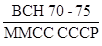
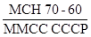
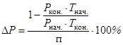
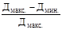

Министерство монтажных и
специальных строительных работ СССР
ИНСТРУКЦИЯ
ПО МОНТАЖУ И ИСПЫТАНИЮ ТРУБОПРОВОДОВ
ДИАМЕТРОМ УСЛОВНОГО ПРОХОДА ДО 400 мм ВКЛЮЧИТЕЛЬНО НА ДАВЛЕНИЕ СВЫШЕ 9,8 ДО 245
МПа
(СВЫШЕ 100 ДО 2500 кгс/см2)
ВСН 70-79
ММСС
СССР
Москва - 1980
РАЗРАБОТАНА: Государственным институтом по проектированию технологии монтажа предприятий химической промышленности Минмонтажспецстроя СССР (107076, Москва, Колодезный пер., 14).
Главный инженер института Льянов М.А.
Начальник отдела трубопроводов Флоринский A.M.
Начальник отдела сварки Погорельский Л.Г.
Главный инженер проекта Арончик И.С.
ВНЕСЕНА: Главхиммонтажем Минмонтажспецстроя СССР.
Главный инженер Главка Анохин А.В.
СОГЛАСОВАНА:
Минхимпромом (письмо № 04-10-9 от 16.12.77 г.)
Миннефтехимпромом (письмо № 17-56/476 от 30.03.78г.)
Минхиммашем (письмо № 10-5-172/1820 от 25.04.78г.)
Главным техническим управлением Минмонтажспецстроя СССР
Зам. начальника Сукальский Г.А.
В разработке разделов 1, 2, 3, 5, 6 и 7 участвовали A.M. Флоринский, И.О. Арончик и А.В. Вагнер, раздела 4 - Л.Г. Погорельский и И.З. Родин.
СОДЕРЖАНИЕ
|
4. Производство сварочных работ. 11 5. Испытание смонтированных трубопроводов. 28 6. Пусконаладочные работы.. 29 |
|
Министерство монтажных и специальных строительных работ СССР (Минмонтажспецстрой СССР) |
Ведомственные строительные нормы |
 |
|
Инструкция по монтажу и испытанию трубопроводов диаметром условного прохода до 400 мм включительно на давление свыше 9,8 до 245 МПа (свыше 100 до 2500 кгс/cм2) |
Взамен  |
Настоящая инструкция распространяется на монтаж и испытание технологических трубопроводов, поставляемых на монтажную площадку как комплектными линиями, так и россыпью, диаметром условного прохода до 400 мм включительно, работающих под давлением свыше 9,8 до 245 МПа (св. 100 до 2500 кгс/см2) при температуре среды от минус 50 до плюс 510°С, предназначенных для транспортирования жидких и газообразных, в том числе агрессивных пожаро- и взрывоопасных технологических сред.
Инструкция устанавливает основные технические требования к монтажу и испытанию технологических трубопроводов высокого давления, поставляемых на монтажную площадку как комплектными линиями, так и россыпью.
Аксонометрические чертежи трубопроводов высокого давления должны соответствовать монтажным чертежам технологической проектной организации и выполняться по действующим "Указаниям по разработке деталировочных чертежей стальных технологических трубопроводов на давление 10<Ру 250 МПа (100<Ру£2500 кгс/см2)" ВСН 313-73, утвержденным Минмонтажспецстроем СССР 14 сентября 1973 г.
Изготовление и комплектная поставка технологических трубопроводов высокого, давления должны производиться по ОСТ 26-1465-76 "Трубопроводы технологические на давление св. 100 до 1000 кг/см2 (свыше 9,81 до 98,10 МПа). Общие технические требования".
|
Внесены |
Утверждены 12 апреля 1979 г. |
Срок введения
в действие |
Работы по монтажу и испытанию трубопроводов высокого давления необходимо производить в соответствии со СНиП III-31-78 и требованиями настоящей инструкции.
Общие положения
1.1. Проверку и приемку в монтаж комплектных линий, сборочных единиц, а также труб, арматуры и деталей трубопроводов со склада заказчика должен производить представитель монтажной организации, ответственный за монтажи назначенный для выполнения этих работ приказом, при участии представителя технадзора заказчика.
1.2. Не позднее чем за 15 дней до выдачи в монтаж комплектных линий монтажная организация, кроме полного комплекта основного технологического проекта, должна получить от заказчика следующую техническую документацию предприятия-изготовителя комплектных линий: свидетельство об изготовлении сборочных единиц технологических трубопроводов со сборочными чертежами и комплектовочными ведомостями на линии, сборочные чертежи на опоры и подвески.
1.3. При выдаче труб, арматуры, деталей трубопроводов, линз, прокладок и крепежных изделий россыпью одновременно с ними заказчик должен передать монтажной организации вместо свидетельств об изготовлении сборочных единиц техническую документацию, составленную им в объеме и по форме, определенной пп. 1.11-1.17 данной инструкции.
1.4. Вся документация предприятий-изготовителей труб, арматуры, деталей трубопроводов, линз, прокладок и крепежных изделий, а также акты контрольных испытаний, проведенных заказчиком, должны храниться у заказчика (монтажной организации их не передают).
1.5. Допускается выдача монтажной организации паспортов или копий паспортов на отдельные нестандартные изделия при условии, что экземпляр оригинала паспорта хранится у заказчика.
1.6. Комплектные линии, трубы и детали трубопроводов без надлежащих клейм и орнаментовки, некомплектные, в дефектном состоянии (деформации, забитые резьбы или сорванные нитки, следы коррозии на обработанных поверхностях и т.п.), а также комплектные линии, трубы и детали трубопроводов, не обеспеченные или имеющие неправильно оформленную техническую документацию, принимать в монтаж запрещается.
Приемка в монтаж труб, арматуры, деталей трубопроводов, деталей соединений трубопроводов высокого давления должна быть оформлена актами приемки по форме, приведенной в приложении 9.
Проверка и приемка в монтаж комплектных линий и сборочных единиц
1.7. При приемке в монтаж комплектных линий должна быть проверена по документации их комплектность, в том числе наличие:
всех сборочных единиц;
комплектующей арматуры, деталей трубопроводов, линз, прокладок, крепежных изделий и т.п.;
сварочных материалов (электродов, сварочной проволоки) и образцов для сварки;
опор, подвесок, опорных конструкций;
специального монтажного инструмента и приспособлений дм проведения монтажа, предусмотренных проектом.
1.8. При приемке в монтаж сборочных единиц должно быть проверено их техническое состояние в следующем объеме и порядке:
правильность маркировки (сборочные единицы и изделия массой более 30 кг должны иметь маркировку с двух противоположных сторон по окружности);
наличие повреждений при транспортировке, погрузке и выгрузке, наличие коррозии и т.п. (наружным осмотром);
состояние уплотнительных поверхностей и разделок кромок под сварку;
размеры наружных диаметров и толщин стенок торцов;
геометрические размеры сборочных единиц, в том числе и присоединительных;
состояние сварных швов;
наличие торцевых заглушек.
1.9. Необходимо проверить, чтобы в одном упаковочном месте не были упакованы сборочные единицы и детали различных комплектных линий.
1.10. Необходимо проверить правильность заполнения свидетельства об изготовлении сборочной единицы и соответствие записей натуре.
Проверка и приемка в монтаж труб, арматуры, деталей трубопроводов, линз, прокладок и крепежных изделий
1.11. При приемке в монтаж необработанных труб должны быть проверены:
индивидуальный номер каждой трубы и его соответствие номеру, записанному в "Ведомости индивидуальной проверки труб высокого давления" (приложение 2);
наличие всех клейм в объёме, установленном техническими условиями на поставку труб;
длина каждой трубы (замером);
кривизна каждой трубы (внешним осмотром);
правильность и полнота оформления ведомости (см. приложение 2).
1.12. При приемке в монтаж обработанных труб должны быть проверены:
номер трубы (или отрезка трубы) с обоих концов и соответствие их номерам, записанным в "Ведомости учета принятых труб после механической обработки" (приложение 3);
соответствие маркировки фланцев концам трубы (на каждом фланце должен быть выбит номер соответствующего конца трубы);
наличие всех клейм на трубе в объеме, установленном техническими условиями на поставку труб;
состояние резьбы (внешним осмотром, а такие прокручиванием фланцев по резьбе трубы);
состояние и чистота обработки подлинзовых гнезд и кромок под сварку (внешним осмотром);
кривизна трубы (внешним осмотром);
состояние консервации;
наличие торцевых заглушек;
правильность и полнота оформления ведомости (см. приложение 3), а также сверка ее с ведомостью (см. приложение 2).
1.13. При приемке в монтаж арматуры должны быть проверены:
индивидуальный номер каждого изделия, номера (номера партий) фланцев и соответствие их номерам, записанным в "Ведомости арматуры высокого давления, выдаваемой в монтаж" (приложение 4);
наличие всех клейм в объеме, установленном техническими условиями на поставку арматуры;
тип арматуры, правильность комплектации с электрическими приводами;
комплектность (наличие штурвалов, ответных фланцев, линз, прокладок, крепежных изделий и т.п.);
состояние сальниковых уплотнений (затяжка);
состояние резьбы (внешним осмотром, а также прокручиванием фланцев по резьбе штуцеров);
состояние и чистота обработки подлинзового гнезда или кромок под сварку (внешним осмотром);
состояние консервации;
наличие торцевых заглушек;
сроки проведения ревизии и гидроиспытания на складе заказчика;
правильность и полнота оформления ведомости (см. приложение 4) и "Акта испытания арматуры высокого давления" (приложение 12).
1.14. При приемке в монтаж деталей трубопроводов должны быть проверены:
индивидуальный номер каждой детали, номера (номера партий)
фланцев, упорных (ввертных) шпилек, гаек, термокарманов и их соответствие номерам, записанным в "Ведомости деталей трубопроводов высокого давления, выдаваемых в монтаж" (приложение 5);
наличие всех клейм в объеме, установленном техническими условиями на поставку деталей трубопроводов;
состояние резьбы (внешним осмотром, а также прокручиванием фланцев по резьбе штуцеров);
состояние и чистота обработки подлинзовых гнезд или кромок под сварку (внешним осмотром);
наличие, длина и состояние резьбы упорных (ввертных) шпилек и гаек, а также гнезд под них;
состояние консервации;
наличие торцевых заглушек;
правильность и полнота оформления ведомости, (см. приложение 5).
1.15. При приемке в монтаж фланцев должны быть проверены:
номер партии фланца и его соответствие номеру, записанному в "Ведомости фланцев высокого давления, выдаваемых в монтаж" (приложение 6);
наличие всех клейм, а также правильность маркировки (орнаментовки) фланцев в соответствии с техническими условиями на их поставку;
состояние резьбы или кромки под сварку (внешним осмотром),
состояние и чистота уплотнительной поверхности (внешним осмотром);
состояние консервации;
правильность и полнота заполнения ведомости (см. приложение 6).
1.16. При приемке в монтаж линз и прокладок должны быть проверены:
номер партии линзы (прокладки) и его соответствие номеру, записанному в "Ведомости линз и прокладок высокого давления, выдаваемых в монтаж" (приложение 7);
наличие всех клейм, а также правильность маркировки (орнаментовки) линз в соответствии с техническими условиями на их поставку;
состояние и чистота обработки уплотняющих поверхностей (внешним осмотром);
состояние консервации;
правильность и полнота заполнения ведомости (см. приложение 7).
1.17. При приемке в монтаж крепежных изделий должны быть проверены:
номера партий шпильки и гаек и их соответствие номерам, записанным в "Ведомости крепежных изделий высокого давления, выдаваемых в монтаж" (приложение 8);
наличие всех клейм, а также правильность маркировки (орнаментовка) в соответствии с требованиями технических условий на поставку крепежных изделий;
длина шпильки (путем замера);
состояние резьбы (внешним осмотром, а также прокручиванием по шпильке гаек);
состояние консервации;
правильность и полнота заполнения ведомости (см. приложение 8).
1.18. При приемке в монтаж фланцев, линз, прокладок и крепежных изделий необходимо сверять их количество в партиях, выдаваемых в монтаж, с количеством, указанным для этих партий в соответствующих ведомостях.
1.19. Фланцы, линзы, прокладки и крепежные изделия, комплектующие обработанные трубы, арматуру и детали трубопроводов, выдаваемые в монтаж, кроме проверки комплектности с указанными изделиями, должны проходить проверку соответственно по пп. 1.15-1.17. При отсутствии на них ведомостей (см. приложения 6, 7 и 8) номера партий сверяют по ведомостям на основные изделия, в комплект которых они входят (см. приложения 3, 4 и 5).
Организация монтажной площадки
2.1. До начала монтажных работ на монтажной площадке должен быть выделен и оборудован сборочный участок для складирования, сортировки и укрупнительной сборки трубопроводов.
2.3. Сборочный участок должен быть обеспечен грузоподъемными механизмами как для сортировки и укрупнительной сборки трубопроводов, так и для транспортировки укрупненных сборочных единиц непосредственно на место монтажа.
2.4. Сборочный участок должен быть оборудован стендами для укрупнительной сборки, а также оборудованием для механической, термической обработки и сварки трубопроводов.
2.5. В холодное время года сборочный участок должен быть оборудован закрытыми будками (тепляками) для сварки трубопроводов.
2.6. На монтажной площадке должен быть оборудован склад для хранения и сушки электродов.
2.7. При значительном объеме работ по контролю качества сварных швов на монтажной площадке должно быть оборудовано помещение (лаборатория) для проявления рентгенографических пленок.
2.8. Комплектные линии, сборочные единицы, трубы и детали трубопроводов высокого давления должны поступать на сборочный участок строго по графику, в зависимости от сроков монтажа тех или других линий трубопроводов.
Транспортировка и хранение
2.9. Перевозить сборочные единицы, трубы, арматуру и детали трубопроводов следует на имеющихся транспортных средствах с обязательным применением распорных приспособлений, закрепляющих их в кузове (на платформе). Линзы, прокладки, крепеж и другие мелкие детали должны быть упакованы в ящики.
Погрузку и разгрузку необходимо осуществлять грузоподъемными механизмами, отдельные детали - захватывать специальными стропами с применением траверс.
2.10. Прямые трубы с навернутыми фланцами при перевозке должны быть уложены в кузове автомашины на специальные деревянные гребенчатые подкладки, препятствующие перекатыванию и сближению труб при толчках.
Трубы длиной, превышающей габариты кузова автомашины, следует перевозить на автомашинах с прицепами (промежуточными и концевыми), что предотвратит появление в процессе транспортировки труб чрезмерных напряжений, которые могут возникнуть при наличии больших безопорных пролетов и плеч.
2.11. Транспортировать сборочные единицы, трубы, арматуру и детали трубопроводов волоком запрещается.
2.12. Для складирования сборочных единиц, труб, арматуры, деталей трубопроводов, линз, прокладок и крепежных изделий на каждом монтажном объекте или внешних трассах должны быть устроены специальные стеллажи и отведено место для сборки труб, деталей и арматуры.
Складирование и сборка непосредственно на земле не допускаются.
2.13. Во избежание повреждения резьбы, уплотнительных поверхностей, фасок под сварку, а также попадания грязи и посторонних предметов во внутренние полости в процессе транспортировки и хранения снимать со сборочных единиц, труб, арматуры и деталей трубопроводов защитные заглушки или пробки не разрешается. Их следует снимать только непосредственно перед внутренним осмотром и присоединением очередных монтируемых деталей или сборочных единиц.
2.14. Складировать сборочные единицы, трубы и детали трубопроводов массой более 30 кг следует так, чтобы их маркировка всегда была доступна для осмотра.
Укрупнение сборочных единиц
2.15. Укрупнять сборочные единицы необходимо в условиях мастерских монтажных заготовок или на сборочном участке монтажной площадки, оборудованном по пп. 2.2 - 2.5. настоящей инструкции.
2.16. Укрупнение сборочных единиц должно быть выполнено по аксонометрическим чертежам, разработанным в соответствии с "Указаниями по разработке деталировочных чертежей стальных технологических трубопроводов на давление 10<Ру 245 МПа (100<Ру£2500 кгс/см2)" ВСН 313-73, утвержденными Минмонтажспецстроем СССР 14 сентября 1973 г.
2.17. При укрупнении сборочных единиц в мастерских монтажных заготовок их габариты и масса должны соответствовать грузоподъемности имеющихся транспортных средств.
2.18. При укрупнении сборочных единиц непосредственно на монтажной площадке следует следить за тем, чтобы масса укрупненных сборочных единиц не превышала грузоподъемности обслуживающего монтажную площадку грузоподъемного оборудования, а габариты обеспечивали возможность монтажа.
Общие указания
3.1. Строительная часть зданий, в которых монтируют трубопроводы, а также все строительные конструкции, рассчитанные на крепление к ним трубопроводов, в том числе и эстакады, должны быть выполнены с соблюдением правил, изложенных в соответствующей главе СНиП.
3.2. Приступать к монтажу трубопроводов разрешается только после окончания всех строительных работ.
3.3. До начала монтажа трубопроводов на отдельно стоящих опорах или эстакадах неподвижные опоры этих конструкций должны быть закреплены в соответствии с проектом.
3.4. В строительных сооружениях и конструкциях должны быть оставлены отверстия для прокладки трубопроводов и установлены (а при необходимости забетонированы) закладные части для их крепления.
3.5. Опорные конструкции под трубопроводы должны быть размещены так, чтобы обеспечивать прокладку трубопроводов в полном соответствии с проектом.
Отклонения опорных конструкций от проектного положения не должны превышать: в плане ±5 мм, по отметкам минус 10 мм, по уклону плюс 0,001.
3.6. Монтажная организация до начала монтажа трубопроводов обязана принять от строительной организации выполненные ею строительные конструкции под монтаж трубопроводов по "Акту готовности опорных конструкций к укладке трубопроводов высокого давления" (приложение 14).
Укладка трубопроводов на конструкции, не принятые по акту, не допускается.
3.7. Подготовительные работы к монтажу трубопроводов должны быть закончены до начала монтажа. К числу этих работ относятся:
приемка монтируемых сборочных единиц, труб, арматуры, деталей трубопроводов, линз, прокладок, крепежных изделий, опор и опорных конструкций с проверкой их соответствия требованиям проекта и раздела 1 данной инструкции;
проверка правильности расположения и привязки оборудования, а также проверка соответствия чертежам расположения, типа и размеров присоединительных штуцеров на нем;
комплектование линий трубами, арматурой, деталями трубопроводов, сборочными единицами, линзами, прокладками, крепежными изделиями и прочим материалами в соответствии с монтажными спецификациями рабочего проекта;
организация мест складирования;
доставка к месту монтажа сборочных единиц, труб, арматуры, деталей, конструкций крепления и прочих материалов;
устройство и подготовка рабочих подмостей, приспособлений, инструмента, монтажного оборудования и рабочих мест.
3.8. Доставленные к месту и подготовленные к монтажу трубы, а также сборочные единицы непосредственно перед установкой их в линии должны быть осмотрены (чистота внутренней поверхности) в присутствии представителя заказчика и составлен "Акт проверки внутренней очистки трубопроводов высокого давления" (приложение 13).
Разбивка трассы и установка опор трубопроводов
3.9. До начала монтажа трубопроводов и сборочных единиц должна быть произведена разбивка трассы и разметка мест установки опор.
Разбивку осей трубопроводов следует производить по монтажным чертежам, в которых должна быть указана привязка осей к относительным отметкам полов, перекрытий, стен, колонн и других деталей строительных конструкций.
3.10. Приступать к установке кронштейнов, опор и подвесок следует только после окончательной разбивки осей трубопроводов, определения мест крепления и расположения деталей трубопроводов и арматуры.
3.11. Места отверстий в строительных конструкциях для закладных частей крепления трубопроводов должны быть указаны в строительной части проекта и подготовлены при выполнении строительных работ (оставлены открытыми, в них установлены пробки или сами закладные части).
3.12. При установке в отверстия закладных частей их опорные поверхности должны плотно прилегать к строительной конструкции.
3.13. После заливки закладных частей цементным раствором в течение времени, необходимого для его схватывания (время должна установить строительная организация), выполнение каких-либо работ, в результате которых на закладные части может быть передана нагрузка, запрещается.
3.14. При установке опор под трубопроводы необходимо соблюдать следующие требования:
при креплении к стенам или колоннам кронштейны должны прилегать не к штукатурке, а к бетону или кирпичной кладке. При наличии на опорной поверхности штукатурки ее необходимо удалить;
если опора или стяжные хомуты показаны на чертеже утопленными в кладку или бетон, эта заделка должна быть выполнена с тщательной и аккуратной подрубкой кладки или бетона;
верхние плоскости опор должны быть выверены по уровню;
подвижные опоры трубопроводов, подвергающиеся тепловым удлинениям, необходимо устанавливать с учетом последних, для чего опоры при монтаже следует смещать от оси опорной поверхности в сторону, противоположную удлинению трубопроводов, на половину величины удлинения, указанной в проекте, с учетом поправки на температуру воздуха в период монтажа;
тяги подвесок трубопроводов, не имеющих тепловых удлинений, должны быть установлены отвесно; тяги подвесок трубопроводов, имеющих тепловые удлинения, должны быть установлены с наклоном в сторону, противоположную удлинению трубопроводов, на половину величины удлинения, указанной в проекте, с учетом поправки на температуру воздуха в период монтажа;
отклонение опор от проектного положения не должно превышать: в плане ±3 мм для трубопроводов внутри помещения и ±5 мм для наружных трубопроводов; по отметкам мину 5 мм; по уклону плюс 0,001;
для обеспечения проектного уклона трубопровода допускается установка под подошвы опор металлических подкладок соответствующей толщины, привариваемых к закладным частям и металлоконструкциям. Устанавливать металлические подкладки между опорами и трубопроводом не разрешается;
при монтаже подвесок с пружинами я пружинных опор сжатие пружин должно быть обеспечено распорными приспособлениями.
Пружины при установке должны быть затянуты в соответствии с указаниями в проекте;
на вертикальных трубопроводах опорные конструкции под пружинные опоры и подвески должны быть строго перпендикулярны к направлению усилия так же, как и верхние опорные тарелки пружин.
3.15. При установке опор и подвесок с деревянными колодками последние должны быть изготовлены в соответствии с проектом из твердых пород дерева (дуб, бук и т.п.). Замена пород дерева для изготовления колодок допускается только по письменному разрешению проектной организации.
3.16. Деревянные колодки перед их установкой должны быть обработаны противосептическим и противопожарным составами.
3.17. Трубы следует укладывать на подушки неподвижных опор плотно, без зазоров и перекосов, хомуты должны плотно прилегать к трубе и не допускать ее перемещения в неподвижной опоре.
3.18. Все подвижные части опор должны быть смазаны консистентной смазкой, не разлагающейся при нагревании опоры.
3.19. Для предотвращения коррозии металлические детали конструкций опор и подвесок должны быть окрашены.
Сборка фланцевого соединения
3.20. Непосредственно перед сборкой фланцевого соединения уплотнительные поверхности труб, арматуры и деталей трубопроводов, а также саму линзу (прокладку) необходимо промыть в керосине и насухо протереть.
Сборку фланцевого соединения следует производить так, чтобы полностью исключить попадание смазки на уплотнительные поверхности.
3.21. При сборке фланцевого соединения необходимо строго контролировать расстояние от торца трубы (штуцера арматуры или детали трубопровода) до плоскости фланца. Указанные расстояния приведены в табл. 1.
3.22. При сборке фланцевого соединения фланцы между собой торцы труб должны быть строго параллельны, что необходимо проверить щупом с одновременной проверкой отсутствия зазора между черными поверхностями фланца и гаек.
Таблица 1
Размеры в мм
|
Диаметр условного прохода Ду |
||||||||||||||||
|
3 |
6 |
10 |
15 |
25 |
32 |
40 |
50 |
65 |
80 |
100 |
125 |
150 |
200 |
|||
|
Расстояние между торцом трубы и фланцем |
||||||||||||||||
|
I |
1,5 |
2 |
2 |
2 |
2 |
3 |
3 |
3 |
3 |
4 |
4 |
6 |
6 |
|||
|
II |
- |
1,5 |
2 |
2 |
2 |
2 |
3 |
3 |
3 |
4 |
4 |
6 |
6 |
6 |
||
|
III |
- |
1,5 |
2 |
2 |
2 |
2 |
3 |
3 |
3 |
4 |
4 |
6 |
6 |
6 |
||
|
IV |
- |
1,5 |
2 |
2 |
2 |
2 |
3 |
3 |
4 |
4 |
6 |
6 |
6 |
6 |
||
|
2500 |
- |
5 |
5 |
5 |
5 |
5 |
5 |
- |
- |
- |
- |
- |
- |
- |
||
Устранение несоосности трубопровода путем излома оси во фланцевом соединении категорически запрещается.
Допускаемое отклонение параллельности фланцев - не более 0,05 мм на каждые 100 мм условного диаметра трубопровода.
3.23. Резьба шпилек перед их установкой должна быть покрыта маслографитной смазкой.
3.24. Каждое фланцевое соединение должно быть полностью укомплектовано шпильками одной партии.
3.25. Для исключения перекосов затягивать фланцевое соединение необходимо постепенно, попеременным (крест накрест) подтягиванием гаек.
Окончательно затягивать фланцевое соединение следует специальными ключами (мерными или с указателем силы затягивания), позволяющими контролировать степень затяжки.
Усилия, необходимые для затяжки фланцевого соединения определенного диаметра и давления, приведены в табл. 2.
3.26. При отсутствии тарированных гаечных ключей затягивать фланцевые соединения следует обычными гаечными ключами с применением рычага, длину которого определяют по формуле
l= 0,0035´Р´d,
где l - длина рычага при выполнении операции одним рабочим (усилие рабочего принимают равным 30 кгс), мм;
Р - усилие затяжки одной шпильки (величину берут по табл. 2), кгс;
d - наружный диаметр шпильки, мм.
3.27. Окончательную затяжку фланцевого соединения разрешается производить при температуре окружающего воздуха не ниже минус 20°С.
3.28. В собранном фланцевом соединении шпильки должны выступать из гаек равномерно с обеих сторон не менее чем на одну нитку. Прокладывать шайбы между фланцами и гайками не разрешается.
3.29. По окончании сборки фланцевого соединения пространство между фланцами должно быть заполнено консистентной смазкой. Выбирать смазку следует с учетом максимальной летней температуры окружающего воздуха.
Таблица 2*
|
Усилие затяжки одной шпильки (кгс) при условном давлении, кгс/см2 |
||||||||
|
200 |
250 |
320 |
400 |
500 |
640 |
800 |
1000 |
|
|
6 |
112 |
120 |
131 |
145 |
150 |
185 |
215 |
246 |
|
10 |
312 |
335 |
367 |
405 |
450 |
520 |
600 |
660 |
|
15 |
700 |
750 |
820 |
675** 900 |
760** 1000 |
875 |
1000 |
1150 |
|
25 |
1180 |
1270 |
1390 |
1530 |
1700 |
1970 |
2260 |
2600 |
|
32 |
2100 |
2250 |
2450 |
2700 |
2000** 3000 |
2300 |
2650 |
3100 |
|
40 |
2100 |
2250 |
2450 |
2700 |
3000 |
3450 |
3950 |
4600 |
|
50 |
3750 |
4000 |
4400 |
4850 |
5400 |
6250 |
7100 |
8250 |
|
65 |
5150 |
5500 |
6000 |
6700 |
7400 |
8500 |
9800 |
11400 |
|
80 |
7700 |
8200 |
9000 |
9900 |
11000 |
9500** 12700 |
11000* 14500 |
12700 |
|
100 |
10000 |
10700 |
11700 |
9700** 13000 |
10800** 14400 |
12400 |
14200 |
16500 |
|
125 |
11600 |
12500 |
13600 |
15100 |
16800 |
19400 |
22200 |
25700 |
|
150 |
17300 |
18500 |
20000 |
22300 |
25000 |
28600 |
32700 |
38000 |
|
200 |
28000 |
30000 |
33000 |
29000** 35000 |
32400** 40000 |
47000 |
53000 |
620000 |
|
300 |
- |
- |
36400 |
- |
- |
- |
- |
- |
|
350 |
- |
- |
49400 |
- |
- |
- |
- |
- |
|
400 |
- |
- |
52200 |
- |
- |
- |
- |
- |
*В таблице даны усилия затяжки для фланцевых соединений со сферическими линзами и прокладками овального восьмиугольного сечения.
**В числителе - усилие затяжки одной шпильки для фланцевых соединений:
Ду= 15 мм с четырьмя шпильками,
Ду= 32 мм с шестью шпильками,
Ду= 80 мм с восемью шпильками,
Ду= 200 мм с десятью шпильками;
Ду в знаменателе - усилие затяжки одной шпильки для фланцевых соединений:
Ду= 15 мм с тремя шпильками,
Ду= 32 мм с четырьмя шпильками,
Ду= 80 мм с шестью шпильками,
Ду= 100 мм с шестью шпильками,
Ду=200 мм с восемью шпильками.
Монтаж трубопроводов
3.30. Монтаж трубопроводов необходимо проводить в соответствии с рабочими чертежами, утвержденными в установленном порядке. Каждое отклонение от проекта должно быть оформлено письменным разрешением проектной организации (полученным через заказчика), которое после окончания монтажа прилагают к сдаточной исполнительной документации.
3.31. Монтаж трубопроводов можно производить как отдельными элементами (трубы, арматура, детали трубопроводов), так и укрупненными сборочными единицами (секции, узлы).
3.32. Укрупнительную сборку трубопроводов следует выполнять как централизованным путем, так и на монтажной площадке, на специальных жестких стеллажах с деревянными подкладками.
3.33. Габариты и масса отдельных секций, сборочных единиц и узлов должны быть определены в каждом отдельном случае в зависимости от конкретных условий монтажа.
3.34. Если укрупненные сборочные единицы устанавливают линию не сразу, торцы их должны быть заглушены.
3.35. Монтаж трубопроводов следует начинать с установки щитов управления и обвязки оборудования и монтировать все трубопроводы, за исключением компенсирующих участков, указанных рабочих чертежах или определенных монтирующей организацией.
Компенсирующие участки следует изготовлять и монтировать только после окончательного закрепления всех трубопроводов и определения их размеров и конфигурации путем тщательных замеров по месту.
3.36. Укладывать трубопроводы и устанавливать арматуру, детали трубопроводов и опоры необходимо так, чтобы вся имеющаяся на них маркировка находилась на свободных для доступа осмотра местах.
3.37. При подъеме и установке в линии прямых участков, секций, сборочных единиц и укрупненных сборочных единиц фланцевые соединения должны быть окончательно затянуты, а сварные стыки - заварены.
3.38. При монтаже поднятые трубы, секции или укрупненные срочные единицы должны быть временно закреплены и лишь затем присоединены к оборудованию. Крепить пространственные сбоечные единицы следует так, чтобы они были устойчивы и не могли сместиться под действием собственной массы. Прямые участки труб должны быть уложены не менее чем на две опоры, исключающие их чрезмерные прогибы.
3.39. Присоединение трубопроводов к оборудованию консольно без закрепления на опорах не допускается.
3.40. Отверстия в стенах, перегородках, перекрытиях и других строительных конструкциях, через которые прокладывают трубопроводы, должны иметь гильзы (отрезки труб, внутренний диаметр которых на 10 - 20 мм больше наружного диаметра прокладываемой трубы). Участки трубопроводов, заключенные в гильзы, не должны иметь стыков и маркировки. Зазоры между трубопроводами и гильзами с обоих концов должны быть заполнены асбестом или другим негорючим материалом, допускающим перемещение трубы внутри гильзы.
3.41. Трубопроводы Ду=25 мм и менее при прокладке вдоль стен должны огибать оконные и дверные проемы.
3.42. При прокладке, трубопроводов вдоль стен в случае отсутствия указаний в проекте расстояние между осью трубопровода диаметром до 32 мм и стеной должно быть не менее 100 мл.
3.43. При параллельной прокладке трубопроводов фланцевые соединения для удобства сборки и разборки следует располагать вразбежку. При расположении фланцевых соединений в одной плоскости расстояние между фланцами в свету для трубопроводов Ду£40 мм должно быть не менее 50 мм, а для трубопроводов с большим диаметром условного прохода 100 мм.
3.44. При укладке трубопроводов сварные стыки следует располагать на расстоянии не менее 50 мм от края опор.
3.45. Расстояние между фланцевыми соединениями и опорами необходимо принимать из расчета возможности свободной сборки и разборки соединений равным 0,3 м для труб Ду до 60 мм и 0,5 м для труб больших диаметров.
3.46. Устанавливать опоры в местах маркировки трубопроводов не разрешается.
3.47. Устранять зазоры между торцами труб, нахлесты или несовпадение осей труб, возникшие при укладке трубопроводов, категорически запрещается путем нагрева, натяжения труб или искривления осей трубопроводов.
3.48. При укладке трубопроводов на эстакадах работы по окончательному их закреплению в каждом температурном блоке следует вести от неподвижных опор.
3.49. Укладывать прямые участки трубопроводов следует не менее чем двумя грузоподъемными механизмами, оснащенными специальными грузозахватными приспособлениями. Укладка одним механизмом не допускается.
3.50. Тали, блоки и другие грузоподъемные средства, применяемые при монтаже трубопроводов, следует крепить к узлам и элементам строительных конструкций, обладающих необходимой прочностью. Возможность крепления за те или иные узлы и конструкции должна быть согласована с проектной или строительной организацией.
3.51. При перерывах в работе свободные концы монтируемых трубопроводов необходимо закрывать заглушками или пробками.
Установка арматуры
3.52. При монтаже трубопроводов сначала следует установить на опоры арматуру, закрепить ее, только после этого приступить к подсоединению к ней труб и фасонных деталей.
3.53. Арматуру при подъеме и перемещении грузоподъемными механизмами следует стропить только за корпус.
3.54. Каждая единица арматуры должна быть жестко закреплена на опорах. При отсутствии указаний в проекте (для арматуры малых диаметров) крепить ее по месту следует по указанию заказчика.
При креплении арматуры необходимо следить за тем, чтобы элементы крепления не закрывали имеющуюся на ней маркировку.
3.55. Сальниковые уплотнения установленной и предъявляемой к сдаче арматуры не должны быть затянуты до отказа.
3.56. Всю арматуру вентильного типа следует устанавливать так, чтобы поток газа (продукта) был направлен "под клапан". Установка арматуры с ходом газа (продукта) "на клапан" не допускается, за исключением случаев, особо оговоренных в проекте.
3.57. Вентильную арматуру с ручным приводом при отсутствии указаний в проекте разрешается устанавливать в любом положении, если обеспечен свободный доступ для ее обслуживания.
3.58. При установке арматуры вентильного типа особое внимание необходимо уделять правильности установки вентилей заборного или регулирующего типа.
3.59. Вентильную арматуру с электрическими приводами заказчик должен поставлять на монтажную площадку комплектно с электрооборудованием.
3.60. Арматуру с электроприводами следует устанавливать в горизонтальном или вертикальном положении, указанном в паспорте (инструкции) на электропривод.
3.61. При установке обратных клапанов необходимо следить за тем, чтобы направление указательной стрелки на корпусе клапана совпадало с направлением движения газа (продукта) по трубопроводу .
3.62. Перед установкой предохранительной арматуры необходимо убедиться, что она оттарирована на нужное давление, и проверить наличие на ней пломб.
Монтаж компенсаторов
3.63. Арматура вентильного типа при проведении гидравлических испытаний должна находиться в открытом состоянии.
Использование арматуры вместо глухих линз или заглушек для отсечения участков трубопровода при проведении гидравлических испытаний запрещается.
3.64. Монтаж П-образных компенсаторов следует производить в соответствии с размерами и конфигурацией, указанными в рабочем проекте.
3.65. Перед установкой компенсаторы должны быть предварительно растянуты (сжаты) на величину, указанную в проекте, с учетом поправки на температуру воздуха в период монтажа.
3.66. Компенсаторы должны быть установлены в линии вместе с распорными (стягивающими) приспособлениями, которые снимают после окончательного закрепления трубопроводов на неподвижных опорах.
3.67. На предварительную растяжку (сжатие) компенсаторов должен быть составлен "Акт на предварительную растяжку (сжатие) компенсатора" (приложение 15).
3.68. Горизонтальные компенсаторы при отсутствии указаний в проекте следует устанавливать на трех подвижных опорах: двух на прямых участках и одной на спинке компенсатора.
3.69. При установке компенсатора па линии с уклоном его боковые части необходимо располагать горизонтально по уровню; уклон допускается только на его концах и спинке.
Квалификация ИТР и рабочих
4.1. Руководство сборочными и сварочными работами и контроль за соблюдением технологии сборки и сварки, а также контроль за качеством сварных соединений должны осуществлять инженерно-технические работники (ИТР), прошедшие специальную подготовку, и изучившие настоящую инструкцию, рабочие чертежи и технологические процессы сборки и сварки монтируемых трубопроводов.
ИТР должны быть аттестованы аттестационной комиссией, назначаемой руководителем предприятия, выполняющего монтаж и сварку трубопроводов. Аттестацию ИТР следует проводить не реже одного раза в три года.
*Раздел распространяется на трубопроводы, работающие при давлении свыше 9,8 до 98,0 МПа (св. 100 до 1000 кгс/см2)
4.2. К выполнению работ по прихватке, сварке и наплавке могут быть допущены сварщики, аттестованные в соответствии с требованиями "Правил аттестации сварщиков", утвержденными Госгортехнадзором СССР 22 июня 1971 г., имеющие удостоверения и дополнительно прошедшие обучение и квалификационные испытания на право допуска к сварке партии или ряда партий однотипных стыков.
Программа практической и теоретической подготовки и квалификационных испытаний сварщиков должна быть утверждена руководителем организации, выполняющей монтаж и сварку трубопроводов. Отметки о сдаче квалификационных испытаний должны быть внесены в удостоверение сварщика.
Испытания сварщиков должна проводить квалификационная комиссия, состав которой установлен "Правилами аттестации сварщиков".
Сварщиков, допущенных к сварке трубопроводов, необходимо подвергать периодическим и внеочередным контрольным испытаниям.
Примечание. Партией однотипных стыков считаются сварные соединения труб следующих групп условных диаметров Ду: 6 - 25; 2 - 60, 70 - 100; 125 - 200 и 250 - 400 мм из стали одной марки или из одних и тех же сочетаний марок сталей, выполненные по единому технологическому процессу, имеющие одинаковые конструктивные элементы и форму разделки кромок и отличающиеся друг от друга толщиной стенки не более чем на 50%.
4.3. Методика, объем и периодичность квалификационных и периодических испытаний сварщиков должны соответствовать разделу 13 ОСТ 26-1434-76.
4.4. Квалификация сварщиков не должна быть ниже:
5 разряда - при сварке механизированными способами или сварке поворотных стыков;
6 разряда - при сварке неповоротных стыков.
4.5. К выполнению работ по термической обработке сварных стыков разрешается допускать операторов-термистов, прошедших обучение по программе, утвержденной руководителем предприятия, выполняющего монтаж и сварку трубопроводов.
4.6. Квалификация оператора-термиста не должна быть ниже 4 разряда.
4.7. К выполнению контроля неразрушающими методами можно допускать дефектоскопистов, прошедших теоретическое и практическое обучение по специальной программе, утвержденной в установленном порядке, и получивших удостоверения о допуске их к дефектоскопии сварных соединений соответствующим методом.
Дефектоскописты, независимо от стажа работы, должны подвергаться контрольным испытаниям не реже одного раза в год, а также при перерыве в работе более трех месяцев.
4.8. В список, составленный по форме, приведенной в приложении 16, должны быть внесены фамилии сварщиков, операторов-термистов и дефектоскопистов, их разряд, номер личного клейма, номер и срок действия удостоверения.
Сварочное оборудование
4.9. Для производства сварочных работ должны быть использованы серийно выпускаемые источники питания: преобразователи, выпрямители, трансформаторы, а также автоматы и полуавтоматы для сварки в среде защитных газов и под флюсом с соответствующими источниками питания.
4.10. Сварочное оборудование должно быть укомплектовано в соответствии с паспортами, налажено и смонтировано по инструкциям предприятий-изготовителей.
4.11. Отклонение напряжения питающей сети, к которой подключено сварочное оборудование, может достигать ±5% номинального по ГОСТ 13109-67.
Сварочные материалы
4.12. Сварочные материалы должны соответствовать требованиям действующих стандартов или технических условий, а также данным паспортов или сертификатов на поставленную партию материала.
4.13. При ручной электродуговой сварке следует применять электроды:
по ГОСТ 9467-75, ГОСТ 9466-75, техническим условиям на электроды конкретных марок - для сталей групп С; ХГ; ХМ; ХФ;
по ГОСТ 10052-75, ГОСТ 9466-75 и техническим условиям на электроды конкретных марок - для сталей группы ХН.
4.14. В качестве присадочного материала следует применять сварочную проволоку по ГОСТ 2246-70 или техническим условиям на проволоку конкретных марок.
4.15. Флюсы следует применять по ГОСТ 9087-69 и техническим условиям на флюсы конкретных марок.
4.16. Вольфрамовые прутки следует применять:
лантанированные - по ТУ 48-19-27-77;
итрированные марки СВИ-1 - по ТУ 48-19-221-76.
4.17. Защитные газы следует применять:
аргон газообразный сортов: высший, первый по ГОСТ 10157-73;
углекислый газ (двуокись углерода, сорт сварочный) - по ГОСТ 8050-76.
4.18. Независимо от наличия сопроводительного документа электроды должны быть подвергнуты проверке на сварочно-технологические свойства по ГОСТ 9466-75.
4.19. Качество флюса должно быть проверено на соответствие требованиям ГОСТ 9087-69.
4.20. Если соответствие электродов или сварочной проволоки марочному составу вызывает сомнение, необходимо произвести стилоскопирование стержня электрода или проволоки.
4.21. Электроды, сварочную проволоку и флюсы необходимо хранить в сухом отапливаемом и проветриваемом помещении при температуре не ниже 17°С.
4.22. Результаты проверки качества сварочных материалов следует заносить в "Журнал проверки качества сварочных материалов" (приложение 17).
4.23. Срок годности сварочных материалов не ограничен, если проверка их качества по пп. 4.18 - 4.20 подтвердит соответствие требованиям государственных стандартов и технических условий.
4.24. Электроды и флюсы перед началом работы необходимо прокаливать. Режимы прокалки* должны соответствовать указанным в табл. 3.
Таблица 3
|
Температура прокалки, °С |
Длительность прокалки, ч |
|
|
Электроды |
||
|
УОНИ-13/45; УОНИ-13/55 |
350 - 400 |
1,5 - 2,0 |
|
МР-3 |
170 - 200 |
1,5 |
|
К-5А |
350 - 380 |
1,5 - 2,0 |
|
ЦЛ-17, ЦЛ-39; ЦЛ-20А; ЦЛ-20Б |
300 - 350 |
0,75 |
|
ЦЛ-26М |
330 - 350 |
1,0 |
|
ЭНТУ-3М |
270 |
0,4 |
|
ЗИО-3; ЗИО-8; НЖ-13 |
300 - 320 |
1,5 |
|
ОЗЛ-8 |
170 |
0,6 - 0,8 |
|
ЭА-400/10У |
320 - 380 |
1,0 |
|
ЦЛ-11 |
320 - 350 |
1,5 |
|
ЦТ-15 |
350 - 450 |
1,5 |
|
Флюсы |
||
|
АН-348АМ |
300 - 350 |
1,0 - 1,5 |
|
ОСЦ-45М |
350 - 380 |
1,5 - 2,0 |
|
АН-22 |
450 - 500 |
2,0 |
|
АН-26 |
270 - 350 |
2,0 - 3,0 |
*Режимы прокалки сварочных материалов, не приведенные в табл. 3, должны соответствовать указанным в паспортах на электроды конкретных марок.
4.25. Прокалка одной и той же партии электродов, предназначенных для сварки трубопроводов из сталей группы ХН, допускается не более двух раз.
4.26. Прокаленные электроды и флюсы необходимо хранить в сушильных шкафах при температуре 100-150°С или в герметичной таре с влагопоглощающими реагентами.
4.27. Сварочная проволока должна быть очищена любым механическим способом от ржавчины и загрязнений и обезжирена.
4.28. Электроды и присадочную проволоку для аргонодуговой сварки следует содержать на рабочем месте в пеналах с закрывающимися крышками, флюс - в герметичной таре.
Подготовка кромок под сварку
4.29. Перед резкой и обработкой кромок трубы и детали трубопроводов следует подбирать в группы по внутренним диаметрам. Разность внутренних диаметров не должна превышать 4%, но не более 2 мм.
4.30. Резку заготовок и подготовку кромок под сварку следует выполнять механическим способом. Допускается разделительная газовая или плазменная резка заготовок труб из сталей всех групп при температуре окружающего воздуха и предварительного подогрева, указанной в табл. 4.
Таблица 4
|
Температура, °С |
||
|
окружающего воздуха |
предварительного подогрева |
|
|
С, ХН |
До минус 20 |
|
|
ХГ |
До минус 10 |
100 - 150 |
|
ХМ, ХФ |
До 0 |
200 - 250 |
*По условиям выполнения сварочных работ применяемые для изготовления труб и деталей стали условно разделены на группы:
С - углеродистая, кремнемарганцовая;
ХГ - хромокремнемарганцовая;
ХМ - хромомолибденовая;
ХФ - хромомолибдено-вольфрамовая, хромомолибдено-вольрамованадиевая, хромомолибденованадиевая;
ХН - хромоникелевая, хромоникельтитановая, хромоникельмолибденотитановая.
4.31. Ширина зоны предварительного подогрева места реза должна быть не менее тройной толщины стенки трубы. Охлаждение после резки следует производить под слоем теплоизоляции.
2 мм - для сталей группы ХН;
3 мм - для сталей группы С и ХГ;
6 мм - для сталей группы ХМ и ХФ.
а) окончательная обработка кромок под сварку абразивным инструментом с обязательной последующей опиловкой обработанных поверхностей напильником при условии соблюдения требований п. 4.32 настоящей инструкции;
б) выравнивание кромок после газовой или плазменной резки наплавкой слоя толщиной до 4 мм. При этом должны соблюдаться следующие условия:
механическая обработка поверхностей под наплавку - по пп. 4.32 и 4.33, а настоящей инструкции с применением технологии сварки, назначенной для данной марки основного материала (подогрев, выбор сварочных материалов, термическая обработка);
последующая окончательная механическая обработка;
контроль окончательно обработанных кромок в местах наплавки методом цветной дефектоскопии.
4.34. Плоскость подготовленного под сварку торца трубной заготовки или детали должна быть перпендикулярна ее оси. Перекос плоскости торца относительно оси не должен превышать 0,5 мм.
4.35. При подготовке к сборке деталей трубопроводов, фактические размеры которых отвечают требованиям стандартов и технических условий, но не соответствуют требованиям рабочих чертежей на сварные соединения в части подготовки кромок, допускается подгонка проточкой или шлифовкой снаружи или изнутри как по всему периметру, так и на отдельных участках при условии сохранения расчетной толщины стенки. Угол проточки не должен превышать 15°.
4.36. Шероховатость поверхности кромок под наплавку и сварку должна быть Rz£80 по ГОСТ 2789-73.
4.37. Типы, конструктивные элементы и размеры кромок швов сварных соединений трубопроводов должны соответствовать ГОСТ 16037-70, отраслевым стандартам и рабочим чертежам, утвержденным в установленном порядке.
4.38. Кромки стыков, а также прилегающие к ним наружная и внутренняя поверхности должны быть зачищены до металлического блеска. Ширина зачистки прилегающих к кромкам поверхностей должна составлять 20 - 30 мм.
4.39. При зачистке следует применять абразивный инструмент, напильники, щетки раздельно для сталей групп С и ХГ, групп ХМ и ХФ, а для группы ХН щетки из нержавеющей стали.
Сборка
4.40. Монтировать трубопроводы следует из максимально укрупненных блоков или сборочных единиц.
4.41. Сборку стыков трубопроводов под сварку следует производить по рабочим чертежам, утвержденным в установленном порядке, отраслевым стандартам и настоящей инструкции.
4.42. Сборку следует осуществлять в сборочных или центровочных приспособлениях любых конструкций без жесткого закрепления.
4.43. Допускается приварка технологических скоб для сборки с последующим удалением их механическим способом, зачисткой наплавленного металла заподлицо с поверхностью труб и контролем зачищенных поверхностей методом цветной или магнитной дефектоскопии.
Для приварки технологических скоб следует использовать те же сварочные материалы, что и для сварки основного металла.
4.44. Технологические скобы на высоте более 5 мм от наружной поверхности трубы допускается удалять любым способом.
4.45. Участок поверхности трубы из стали, требующей термической обработки, на котором расположены места приварки технологических скоб, после выполнения операций по удалению, зачистке и контролю следует подвергать термической обработке по всему периметру.
4.46. При сборке стыков трубопроводов подкладные кольца или пластины применять не разрешается.
4.48. Смещение наружных кромок труб Ду=400 мм допускается в пределах половины допуска на наружный диаметр трубы, но не более 8 мм.
При смещении, превышающем допускаемое значение, на трубе с большим наружным диаметром необходимо выполнить скос под углом 12 - 15°.
4.50. Зазоры в стыках должны соответствовать ГОСТ 16037-70, отраслевым стандартам и рабочим чертежам, утвержденным в установленном порядке.
4.51. Уменьшать зазоры между торцами стыкуемых труб до требуемых размеров нагревом или натяжением не допускается.
4.52. Допускается вварка вставки длиной не менее наружного диаметра трубы, а при наружном диаметре до 100 мм - не менее 100 мм.
4.53. При применении подогрева перед прихваткой и сваркой зазор в монтажных стыках следует устанавливать с учетом температурных удлинений участков трубопроводов (0,9 - 1 мм на 1 м нагреваемого участка трубопровода при нагреве на 100°С).
4.54. Поверхность скоса кромок перед прихваткой следует очистить от загрязнений и ржавчины и обезжирить растворителем (ацетоном, бензином, уайт-спиритом).
4.55. Свободные концы труб на весь период проведения сварочных работ следует заглушить.
4.56. Производить оборку и сварку труб при наличии влаги на поверхности кромок и участках, прилегающих к стыку, запрещается.
4.57. Наружную поверхность состыкованных труб на расстоянии 100 - 150 мм по обе стороны от стыка перед прихваткой и сваркой следует защитить от попадания брызг расплавленного металла раствором мела или каолина, асбестом, а также силиконовыми препаратами, например, типа "Дуга".
4.58. Способ и режимы сварки прихваток должны соответствовать способу и режиму сварки корня шва.
4.59. Длина прихваток должна составлять 15 - 30 мм, высота не должна превышать половины толщины стенки трубы при толщине стенок до 8 мм включительно и 4 мм - при толщине стенок свыше 8 мм.
4.60. Прихватки следует располагать равномерно по периметру стыка. Количество прихваток должно соответствовать указанному в табл. 5. По окончании сварки их следует зашлифовать.
Таблица 5
|
Количество прихваток |
|
|
6 - 25 |
2 |
|
32 - 100 |
2 - 3 |
|
125 - 200 |
3 - 4 |
|
250 - 400 |
4 - 6 |
4.61. Каждый собранный стык следует зачистить от шлака и брызг расплавленного металла и проверить на соответствие требованиям пп. 4.47 - 4.50 настоящей инструкции.
4.62. Дефектные прихватки должны быть удалены механическим способом.
Прихватки, выполненные взамен удаленных, должны быть расположены в новых местах.
4.63. Каждый принятый контролером под сварку стык должен быть зарегистрирован в "Журнале сварочных работ" (приложение 19) и в карте учета стыка.
4.64. На одной из труб принятого под сварку стыка трубопроводов Ду ³32 мм на расстоянии 50 - 60 мм от стыка следует нанести несмываемой краской квадрат со стороной 50 - 60 и шириной линии 5-10 мм. Внутри квадрата должны проставить личное клеймо: контролер, принявший стык под сварку, сварщик, производивший сварку данного стыка, и оператор-термист. Клеймение следует производить ударным способом. Глубина клеймения не должна превышать 0,5 мм.
4.65. Если по условиям технологического процесса стыки после сборки маркировать нельзя, то их следует только зарегистрировать по п.4.63 настоящей инструкций.
Сварка
4.66. К сварке стыков разрешается приступать только при наличии клейма по п. 4.64 или регистрации в журнале (см. приложение 19) или в карте учета стыка.
4.67. Рекомендуются следующие способы сварки:
в защитных газах - для труб Ду£50 мм;
комбинированный с заваркой корня шва в защитных газах и заполнением разделки другими способами (например, ручной электродуговой, под флюсом и т.п.) - для труб Ду>50 мм.
4.68. Трубопроводы, предназначенные для транспортировки коррозионных и водородсодержащих сред, следует сваривать аргонодуговым или комбинированным способом сварки с проваром корня шва в среде аргона высотой не менее 5 мм.
4.69. В зависимости от группы стали, толщины стенки и температурных условий сварку следует выполнять без подогрева, с предварительным либо с предварительным и сопутствующим подогревами. Условия проведения сварочных работ должны соответствовать указанным в табл. 6.
4.70. Подогрев следует осуществлять газовыми горелками, гибкими пальцевыми электронагревателями, нагревателями комбинированного действия, индукторами.
4.71. Ширина зоны нагрева должна быть не менее двойной толщины стенки, но не менее 50 мм в каждую сторону от стыка.
При подогреве следует соблюдать равномерность ширины зоны нагрева по всему периметру трубы.
4.72. Проведение сварочных работ в неблагоприятных погодных условиях допускается при температуре окружающего воздуха выше нижнего предела, указанного для конкретной марки стали в табл. 6 настоящей инструкции, при условии защиты рабочей зоны сварки от ветра, дождя или снегопада тентами, навесами, щитами или специальными зонтами.
Таблица 6
|
Толщина стенок, мм |
Допускаемый нижний предел температуры окружающего воздуха в рабочей зоне, °С |
Необходимость подогрева и температура подогрева |
||
|
группы |
марки |
|||
|
С |
20; углеродистые стали с содержанием углерода до 0,24% |
До 16 |
Минус 20 |
Без подогрева |
|
16 и выше |
Предварительный подогрев на 100 - 150°С |
|||
|
С ХГ |
Углеродистые стали с содержанием углерода до 0,24%; 15ГС; 16 ГС; 14ХГС; 18ХГ |
До 10 |
Минус 10 |
Без подогрева |
|
10 и выше |
Предварительный подогрев на 150 - 200°С |
|||
|
ХМ |
15ХМ; 15ХФ; 30XMA. |
Все толщины |
0 |
Предварительный и сопутствующий подогревы: на 200 - 250°С - при сварке труб из сталей марок 15ХМ; 18 ХГ на 300 - 350°С - из сталей марок 30XMA, 20Х2МА, 22Х3М. 15Х5М на 350 - 400°С - из сталей марок 18Х3МВ; 20Х3МКФ, 12Х1МФ; 15Х1М1Ф; 15ХФ; 12Х8ВФ |
|
ХФ |
20Х2МА; 22Х3М, 15Х5М; 18Х3МВ; 20Х3МФ; 12ХТМФВ; 15Х1М1Ф; 12Х8ВФ |
|||
|
ХН |
12Х18Н10Т; 08Х18Н10Т; 12Х18Н12Т; 08Х18Н12Т; 10Х17Н13М2Т; 10XI7HI3M3T; 08Х17Н15МЗТ; 10Х23Н18; 20X25H20C2 |
Все толщины |
Минус 20 |
Без подогрева |
4.73. Проведение сварочных работ при температуре окружающего воздуха ниже предела, указанного в табл. 6 для данной марки стали, разрешается только в укрытиях, тепляках, защитных кожухах с обязательным условием поддержания температуры в рабочей зоне выше указанных пределов.
4.74. В случаях (см. п. 4.138), когда необходим контроль радиографированием или цветной дефектоскопией корня шва стыков, свариваемых с сопутствующим подогревом, рекомендуется выполнять следующие указания:
после сварки корня шва стык охладить под слоем теплоизоляции до температуры, допускающей проведение контроля (~60°С); нагревательные устройства при этом снимать не следует. Допускается просвечивание без охлаждения стыка через слой теплоизоляции толщиной 5-10 мм;
сразу после снятия со стыка кассет с пленкой или осмотра стыка и удаления проявляющей жидкости при контроле цветной дефектоскопией стык следует нагреть вновь до температуры сопутствующего подогрева;
поддерживать температуру сопутствующего подогрева до получения результатов контроля и окончания сварки стыка.
4.75. После выполнения сварки и контроля корня шва (при необходимости) заполнение разделки стыка из сталей, всех групп (кроме ХН) следует производить непрерывно до полного выполнения шва.
В случае вынужденного перерыва при сварке стыков труб из сталей марок 30ХМА; 20X2M2; 22Х3М; 15Х5М; 18Х3МВ и 20X3MВФ должны быть приняты меры, чтобы температура недоваренных стыков не снизилась ниже температуры сопутствующего подогрева - эту температуру необходимо поддерживать в течение всего перерыва.
4.76. При сварке трубопроводов из сталей группы ХН каждый последующий валик следует наплавлять после охлаждения предыдущего до температуры ниже 100°С.
4.77. При необходимости допускается перерыв в сварке после заполнения разделки на высоту не менее половины толщины стенки. При этом следует обеспечить медленное и равномерное охлаждение стыка.
При возобновлении сварки стык необходимо вновь подогреть до температуры, приведенной в табл. 6 настоящей инструкции.
4.78. При вынужденных перерывах в работе (авария, отключение тока и т.п.) должно быть обеспечено медленное и равномерное охлаждение стыка.
4.79. Если при проведении сварки трубопроводов, изготовленных из сталей групп ХМ и ХФ, температура окружающего воздуха снизится ниже 0°С, следует немедленно принять меры, чтобы температура недоваренных стыков не опускалась ниже температуры сопутствующего подогрева.
4.80. Сварочные материалы должны соответствовать указанным:
в табл. 7 - для сварки в защитных газах;
в табл. 8 - для ручной электродуговой сварки;
в табл. 9 - для автоматической и полуавтоматической сварки под флюсом.
4.81. При сварке в защитных газах необходимо следить за надежностью защиты сварочной ванны и не допускать смещения газовой струи ветром или случайными потоками воздуха. При скорости ветра более 2 м/с в направлении, перпендикулярном стыку, сварку в среде защитных газов производить не рекомендуется.
4.82. Аргонодуговую сварку или сварку в смеси защитных газов следует производить постоянным током прямой полярности, выдерживая при этом дугу длиной 1-2 мм.
4.83. Сварку первого слоя корня шва следует выполнять при минимальном значении силы тока, рекомендуемом для конкретного диаметра вольфрамового электрода.
4.84. Автоматическую аргонодуговую сварку неплавящимся электродом без присадочной проволоки рекомендуется применять для сварки корня шва стыков трубопроводов из сталей групп ХМ, ХФ и ХН Ду>125 мм в случаях, когда величина зазора при сборке не превышает 1 мм.
4.85. Автоматическую аргонодуговую сварку с присадочной проволокой рекомендуется применять для сварки корня шва стыков трубопроводов и сталей всех групп Ду>125 мм в случаях, когда величина зазора при сборке составляет 1-2 мм. Рекомендуемый диаметр сварочной проволоки - 1,6 мм.
Таблица 7
|
Марка сварочной, проволоки |
Защитный газ |
||
|
группы |
марки |
||
|
С |
20; 15ГС; 16ГС |
Св-08ГС Св-08Г2С Св-08ГСМТ |
Аргон Смесь аргона (75%) и углекислого газа (25%) |
|
ХГ |
14ХГС;18ХГ |
Св-08ГС2 Св-08ГС2С |
|
|
15ХМ |
Св-08ХМ Св-08ХГСМА |
||
|
ХM |
15Х5М; 12Х8ВФ |
Св-10Х5М |
|
|
ХФ |
30ХМА; 20Х2МА; 22Х3М |
Св-18ХМА Св-10Х5М Св-08ХМ |
Аргон |
|
15ХФ; 12Х1МФ; 15Х1М1Ф |
Св-08ХГСМФА Св-08ХМФА |
||
|
ХН |
12Х8Н10Т 08X18H10T |
Св-01Х19Н9 Св-04Х19Н902 |
|
|
12Х18Н12Т 08Х18Н12Т |
Св-08Х25Н13БТЮ Св-07Х19Н10Б Св-05Х20Н9ФСБ Св-000Х18Н10 |
||
|
ХН |
10XI7H13M2Т 10XI7H13M3Т 10Х17Н13М3Т 10X17H13M2Т 08Х17Н15М3Т |
Cв-04X19H11M3 Св-06Х19Н10МЗТ Св-000Х17Н14М2 Св-000Х19Н18Г10АМ4 |
|
|
10Х23Н18 |
Св-07Х25Н13 Св-01Х20Н18АГ12 |
Аргон |
|
|
20Х25Н20С2 |
Св-04Х19Н9С2 |
||
Таблица 8
|
Электроды |
|||
|
группы |
марки |
тип |
марка |
|
1 |
2 |
3 |
4 |
|
С |
20 |
Э42А Э46 |
УОН-13/45 МР-3 |
|
15ГС 16ГС |
Э 50A |
УОНИ-13/55 К-5А ТМУ-21 |
|
|
ХГ |
14XГС 18ХГ |
||
|
ХМ |
15ХМ |
Э-09ХМ |
ОЗС-11 ЦУ-2ХМ ТМД-1 ЦЛ-38 |
|
15Х5М |
ЦЛ-17 |
||
|
30ХМА 20Х2МА 22Х3М |
Э-10Х5МФ |
ХЭМ-1 |
|
|
Э-09Х1МФ |
ЦЛ-20А ЦЛ-20АБ |
||
|
ХФ |
18Х3МВ |
Э-10Х5МФ |
ЦЛ-17 |
|
20Х3МВФ |
Э-10ХХМ1ВФ |
ЦЛ-26М |
|
|
15ХФ 12Х1МФ 15Х1М1Ф |
Э-09Х1МВ |
ЦЛ-20А ЦЛ-20Б ЦЛ-39 ТМЛ-3 |
|
|
Э-09ХМ |
ТМЛ-1 |
||
|
12Х8ВФ 12Х18Н10Т 08Х18Н10Т |
Э-10Х8ВФ Э-08Х19Н10Г26 |
ЭГЛ-4 ЦТ-15 ЗИО-3 |
|
|
ХН |
12Х18Н12Т 08Х18Н12Т |
Э-08Х20Н9Г2Б |
ЦЛ-11 ЦЛ-38М Л-40М ОЗЛ-7 АНВ-23 |
|
Э-07Х20Н9 |
ОЗЛ-8 0ЗЛ-13 |
||
|
Э-02Х19Н9Б |
АНВ-13 |
||
|
Э-02Х21Н10Г2 |
ОЗЛ-22 |
||
|
Э-03Х20Н9 |
ОЗЛ-14 |
||
|
Э-07Х19Н11М3Г2Ф |
ЭА-400/10У |
||
|
08Х17Н15М3Т 10Х17Н13М3Т 10X17H13M2T |
Э-06Х19Н11Г2М2 |
ЭА-400/10У ЭНТУ-ЗМ |
|
|
Э-02Х20Н14Г2С2 |
ОЗЛ-20 |
||
|
Э-09Х19Н10Г2М2Б |
НЖ-13 СЛ-28 |
||
|
Э-02Х19Н18Г5АМЗ |
АНВ-17 |
||
|
10Х23Н18 |
Э-10Х25Н13Г2 |
ОЗЛ-4 ОЗЛ-6 |
|
|
20Х25Н2ПС2 |
Э-12Х24Н14С2 |
ОЗЛ-5 |
|
|
Э-28Х24Н16Г6 |
ГС-1 |
||
Таблица 9
|
Марка |
|||
|
группы |
марки |
сварочной проволоки |
флюса |
|
1 |
2 |
3 |
4 |
|
С |
20 |
Св-08ГА, Св-08А Св-08Г2С, Св-08ГС |
АН-348АМ, ОСЦ-45М AН-60 |
|
15ГС, 16ГС |
Св-08ГА, Св-08Г2С |
ОСЦ-45М, AН-348AМ, АН-60, АН-17М |
|
|
XГ |
14ХГС, 18ХГ |
Св-08ГА, Св-8Г2С Св-08ГС |
|
|
ХМ |
15ХМ |
Св-08ХМ, Св-08МХ |
AH-2, АН-15 |
|
15Х5М |
Св-10Х5М Св-08Х3Г2СМ |
АН-42 АН-17М |
|
|
30ХМА, 20Х2МА |
Св-10Х5М, Св-18ХМА |
АН-42 |
|
|
ХФ |
18ХЗМВ 20ХЗМВФ |
Св-18ХМА |
АН-15 |
|
Св-08Х3Г2СМ |
АН-17М |
||
|
15ХФ 12Х1МФ 15Х1МФ |
Cв-08XМФA Св-10ХМФТ |
АН-22 |
|
|
ХН |
12Х18Н10Т 08Х18Н10Т 12Х18Н12Т 08Х18Н12Т |
Св-04Х19Н9 |
АН-26 |
|
Cв-06X19H9T |
48-ОФ-10 |
||
|
Св-07Х19Н10Б Св-08Х19Н10Г2Б Св-07Х19Н9Т10 Св-05Х20Н9ФБС |
48-ОФ-10 АНФ-16 |
||
|
10Х17Н13М2Т 10Х17Н13МЗТ |
Св-08Х25Н13БТЮ Св-04Х19Н11МЗ Св-06Х19Н10МЗТ |
48-ОФ-10, АН-26 АНФ-16, АН-26 48-ОФ-10 |
|
|
10Х17Н13М2Т 10Х17Н13М3Т 08XI7HI5M3T |
Св-000Х19Н18Г10АМ4 Св-06Х20Н11МЗТБ |
АП-18, АН-26 48-ОФ-10 |
|
|
10Х23Н18 |
Св-07Х23Н18 Св-01Х20Н18АГ12 |
АН-18, АН-26 48-ОФ-10 |
|
4.86. Направление сварки для неповоротных вертикальных стыков следует выбирать таким, чтобы участок стыка с максимальным зазором заваривался при движении автомата "на спуск".
4.87 Автоматическую аргонодуговую сварку плавящимся электродом рекомендуется применять при комбинированном способе сварки корня шва поворотных стыков трубопроводов и сталей всех групп и для сварки поворотных стыков трубопроводов и сталей группы ХН.
4.88. Сварку следует выполнять на постоянном токе обратной полярности.
4.89. Величина зазора при сборке под автоматическую аргонодуговую сварку плавящимся электродом во всех случаях не должна превышать 0,5 мм.
4.90. К заполнению разделки шва следует приступать непосредственно после окончания сварки и контроля корня шва.
4.91. При ручной электродуговой сварке неповоротных стыков следует применять электроды диаметром 2,5 - 3 мм для заполнения 1/3 разделки стыка, а при толщине стенки до 8 мм - для заполнения разделки полностью. Для окончательного заполнения разделки - электроды диаметрами 4 и 5 мм. Для сварки в нижнем положении электроды диаметром 5 мм следует применять, начиная о третьего слоя шва.
4.92. Ручную электродуговую сварку стыков трубопроводов и сталей группы ХН следует выполнять электродами диаметрами 3 и 4 мм.
4.93. Автоматическую или полуавтоматическую сварку под флюсом рекомендуется применять для поворотных стыков трубопроводов Ду³200 мм, при этом высота корня шва должна быть 5-6 мм.
Сварку корня шва следует выполнять вручную: аргонодуговую - до высоты корня шва 4-5 мм; электродуговую - до 5-6 мм.
4.94. При сварке разнородных сталей одного структурного класса температуру подогрева следует назначать по более легированной стали в соответствии с табл. 6.
4.95. Способы сварки и сварочные материалы для сварки разнородных сталей одного структурного класса должны соответствовать указанным в табл. 10.
Сварочные материалы следует назначать по менее легированной стали.
Таблица 10
|
Сварка в защитных газах (ручная, полуавтоматическая, автоматическая) |
Ручная электродуговая сварка электродами марки |
Сварка под флюсом (полуавтоматическая, автоматическая) |
|||
|
марки проволоки |
защитный газ или смесь газов |
Марка |
|||
|
проволоки |
флюса |
||||
|
1 |
2 |
3 |
4 |
5 |
6 |
|
20+15ГС 20+6ГС 20+14ХГС |
Св-08Г2С Св-08ГСМТ Св-08ГС |
Аргон Смесь аргона (75%) с углекислым газом (25%) |
УОНИ 13/45 |
Св-08Г2С Св-08А Св-08ГА |
АН-348АМ ОСЦ-45М АН-60 |
|
15ГС(16ГС) + 14ХГС |
УОНИ-13/55 К-5А ТМУ-21 |
Св-08Г2С Св-08ГА |
АН-17М ОСЦ-45М |
||
|
15ГС(16ГС) + 12Х1МФ 15ГС(16ГС) + 15Х1М1Ф |
Св-08Г2С |
АН-348АМ АН-60 |
|||
|
15XМ+ 12X1МФ 15ХМ + 15Х1М1Ф |
Св-08ХМ |
ОЗС-11 ЦЛ-36 ТМЛ-1 |
Св-08ХМ Св-08МХ |
АН-22 АН-15 |
|
|
15Х5М + 15ХМ 15Х5М + 12X1МФ 15Х5М+15Х1М1Ф |
Св-08ХГСМА |
||||
|
30XМA + 20Х2МА 30ХМА + 22ХЗМ |
Св-18ХМА Св-08ХМ |
Аргон |
ХЗМ-1 |
Св-18ХМА Св-10Х5М Св-08ХЗГ20Я |
АН-42 |
|
ЦЛ-20А ЦЛ-20Б |
|||||
|
20 + 30ХМА 20 + 15ХМ |
Св-089С Св-08Г2С |
ЦЛ-17 |
АЯ-Г7М |
||
|
УОНИ-13/45 |
Св-08ГА Св-08А Св-08Г2С |
АН-60 АН-348АМ ОСЦ-45М |
|||
|
УОНИ-13/55 ТМУ-21 К-5А |
|||||
Таблица 11
|
Толщина стенок, мм |
Температура подогрева при наплавке, С |
Рекомендуемое количество слоев |
Электроды |
Примечание |
||
|
тип |
марка |
|||||
|
1 |
2 |
3 |
4 |
5 |
6 |
7 |
|
15ГС 16ГС 14ХГС |
До 10 |
- |
1 |
Э-11Х15Н25М6АГ2 |
ЭА-395/9К |
Без термообработки |
|
Э-08Н60Г7М7Т |
ЦТ-36 |
|||||
|
- |
АНЖР-1 |
|||||
|
15ХМ |
До 5 |
100 - 150 |
2 |
1-го слоя Э-11Х15Н25М6АГ2 |
ЭА-395/9К |
Отпуск осуществлять по режимам, указанным в табл. 13 |
|
2-го слоя Э-07А9Н11МГ2 |
ЭА-400/10У |
|||||
|
Э-08Н60Г7М7Т |
ЦТ-36 |
|||||
|
12Х1МФ |
До 5 |
250 - 350 |
1 |
- |
АНЖР-1 |
То же |
|
15Х5М |
Все толщины |
200-250 |
2 |
1-го слоя Э-11Х15Н25М6АГ2 |
ЭА-395/9К |
Отпуск осуществлять по режимам, указанным в табл. 13 |
|
2-го слоя Э-07А9Н11МГ2 |
ЭА-400/10У |
|||||
|
20X2MA |
То же |
200 - 300 |
1 |
08Н60Г7М7Т |
ЦТ-36 |
То же |
|
22Х3М |
||||||
|
18Х3МВ 20X3MВФ 15Х1М1Ф |
250 - 350 |
- |
АНЖР-1 |
|||
4.96. Сварку разнородных сталей разных структурных классов можно производить либо без предварительной подготовки либо с предварительной направкой переходного слоя.
4.97. Сварку стыков трубопроводов, изготовленных из сталей марок 20; 15ГС; 16ГС; и 14ХГС со сталью группы ХН при толщине стенок до 10 мм разрешается производить без наплавки переходного слоя.
4.98. Сварку стыков трубопроводов, изготовленных из сталей марок 15ХН и 12Х1МВ со сталью группы ХН при толщине стенок до 5 мм допускается производить без наплавки переходного слоя.
4.99. Наплавку переходного слоя следует выполнять в соответствии с рекомендациями табл. 11 настоящей инструкции.
4.100. Толщина наплавленного слоя после механической обработки торцов под сварку для сталей групп С и ХГ должна быть не менее 3 мм.
4.101. Толщина наплавленного слоя после механической обработки торцов под сварку для сталей групп ХМ и ХФ при наплавке одного слоя должна быть 2-4 мм, толщина двух слоев - первого после механической обработки 2 - 4 мм, а суммарная 8 - 11 мм.
4.102. Сварочные материалы для сварки разнородных сталей разных структурных классов должны соответствовать указанным в табл. 12.
4.103. После сварки разнородных сталей разных структурных классов, выполненной в соответствии с требованиями табл. 11 и 12 настоящей инструкции, термическая обработка не требуется.
4.104. Применение других сварочных материалов допускается после получения положительных результатов исследования свойств сварных соединений в объеме требований разд. 8 ОСТ 26-1434-76, подтверждения сварочно-технологических свойств и положительного заключения головной организации.
4.105. Содержание ферритной фазы в наплавленном металле шва не должно превышать, %:
7 - для трубопроводов, предназначенных для работы при температуре свыше 350°С;
3 - для трубопроводов из хромоникельмолибденовых сталей, предназначенных для транспортирования коррозионных сред (при толщине стенки до 5 мм во всем шве, при большей толщине стенки в корне шва на высоте не менее 5 мм);
5 - для трубопроводов из тех же сталей при толщине стенки более 5 мм на наружной поверхности шва.
Таблица 12
|
Сталь групп С, ХГ, ХМ, ХФ |
Сварочные материалы |
|||
|
сварочная проволока (аргонодуговая сварка, сварка корня шва) |
тип |
марка |
||
|
1 |
2 |
3 |
4 |
5 |
|
12Х18Н10Т 08Х18Н10Т 12Х18Н12Т 08Х18Н12Т |
20; 15ГС; 16ГС; 14ХГС при S£10 мм |
Св-10Х16Н25АМ6 |
Э-11Х15Н25М6АГ2 |
ЭА-395/9К |
|
Э-28Х24Н16Г6 |
ОЗЛ-9А |
|||
|
20; 15ГС |
Св-04Х19Н11М3 |
Э-07А9Н11МГ2 |
ЭА-400/10У |
|
|
10Х17Н13М2Т 10Х17Н13М3Т |
16ГС; 14ХГС при S>10 мм |
Св-06Х19Н10М3Т |
||
|
08Х17Н15М3Т |
Св-10Х16Н25АМ6 |
Э-11Х15Н25М6АГ2 |
ЭА-395/9К |
|
|
12Х18Н10Т 08Х18Н10Т 12Х18Н12Т 08Х18Н12Т 10Х17Н3М2Т 10Х17Н13М3Т 08Х17Н15М3Т |
15XM |
Cв-04X19H11M3 |
Э-07А9Н11М12 |
ЭА-400/10У |
|
15X5M, 30 XМA 20X2MA 20X3M |
Св-06X19Н10М3Т Св-06Х15Н60М15 Св-10Х16Н25АМ6 |
Э-08Н60Г7М7Т |
ЦТ-36 |
|
|
18X3MB 20Х3МВФ 12Х1МФ |
Св-Х25Н60М10 |
- |
АНЖР-1 |
|
|
15Х1МФ |
Св-10Х16Н25АМ6 |
|||
4.106. Если содержание ферритной фазы в наплавленном металле шва трубопроводов превышает допускаемое в п. 4.105, должны быть отобраны партии электродов и сварочной проволоки, удовлетворяющие требованиям проекта и настоящей инструкции.
4.107. Сварщик, выполнявший сварку корня шва, по окончании сварки должен каждый стык замаркировать личным клеймом или зарегистрировать в соответствия с требованиями пп. 4.63, 4.66 настоящей инструкции.
Термическая обработка
4.108. Перед термической обработкой каждый сварной стык необходимо проконтролировать: при толщине стенки свыше 16 мм просвечиванием корня шва трубы перед заполнением разделки и во всех случаях по окончании сварки - внешним осмотром.
4.109. Термической обработке слезет подвергать сварные соединения трубопроводов: изготовленные из сталей группы С - при толщине стенки 36 мм и более; групп ХГ, ХМ, ХФ - независимо от толщины стенки; группы ХН - при толщине стенки 36 мм и более; сварные соединения трубопроводов, предназначенных для эксплуатации при температуре -450°С и выше - независимо от толщины стенки.
4.110. Указания о необходимости термической обработки сварных соединений трубопроводов, изготовленных из сталей группы С, при толщине стенки трубы менее 36 мм, обусловленной свойствами транспортируемой среды и условиями эксплуатации, должны быть приведены в техническом проекте.
4.111. Необходимость термической обработки сварных соединений трубопроводов, изготовленных из стали группы С, при толщине стенки трубы менее 36 мм может быть определена при измерении твердости и выявлении отклонений значений твердости зон термического влияния наплавленного металла против норм по п. 4.151 настоящей инструкции.
4.112. Указания о необходимости термической обработки сварных соединений трубопроводов, изготовленных из сталей группы ХН, обусловленной требованиями стойкости против коррозии, должны быть приведены в техническом проекте.
4.113. Термическую обработку сварных стыков, замыкающих систему (линию, часть линии), рекомендуется назначать независимо от диаметра трубопровода, толщины стенки и марки стали.
4.414. Нагрев при термической обработке сварных стыков трубопроводов из сталей всех групп (кроме ХН) разрешается производить любыми промышленными способами.
4.115. Применять газовые горелки для термической обработки сварных стыков трубопроводов из сталей группы ХН не разрешается.
4.116. Нагрев гибкими пальцевыми электронагревателями следует производить в соответствии с требованиями "Инструкции по термической обработке сварных соединений гибким пальцевыми электронагревателями в монтажных условиях" ВСН 267-73, утвержденной Минмонтажспецстроем СССР 14 ноября 1973 г.
4.117. Нагрев при помощи индукционных нагревателей и газовых горелок рекомендуется производить в соответствии с указаниями, приведенными в "Руководящих технических материалах по сварке при монтаже тепловых электростанций" PTМ-1C-73, утвержденных Минэнерго СССР 18 июля 1972 г.
4.118. Минимально допустимые температуры в рабочей зоне, при термической обработке не должны отличаться от температурных условий проведения сварочных работ, приведенных в табл. 6 настоящей инструкции.
4.119. При неблагоприятных погодных условиях термическую обработку следует производить с защитой рабочей зоны по п. 4.72 настоящей инструкции.
4.120. Термическую обработку необходимо выполнять с возможно меньшим перерывом после окончания сварки.
4.121. Сварные соединения трубопроводов с толщиной стенки 36 мм и более из сталей групп ХМ и ХФ марок 15ХМ и 12Х1МФ следует подвергать термической обработке непосредственно после окончания сварки; при вынужденных перерывах температуру стыка необходимо поддерживать на уровне температуры соответствующего подогрева при сварке..
4.122. Если произвести термообработку непосредственно после окончания сварки невозможно, то при охлаждении стыка следует:
поддерживать температуру предварительного или сопутствующего подогрева в течение 1 ч;
обеспечить скорость охлаждения стыков трубопроводов из сталей групп ХМ и ХФ не более 70°С в 1 ч;
стыки трубопроводов из сталей групп С и ХГ охлаждать под слоем теплоизоляции (стыки трубопроводов из сталей группы ХН можно охлаждать на воздухе);
стык проверить непосредственно перед термической обработкой внешним осмотром с применением лупы десятикратного увеличения.
4.123. Термическую обработку следует выполнять без перерыва. При вынужденном перерыве должно быть обеспечено медленное равномерное охлаждение стыка (нагреватели и теплоизоляцию со стыка снимать не следует). Скорость охлаждения стыка от температуры отпуска до 300°С не должна превышать величин, указанных в табл. 13 или 14. При скорости охлаждения, превышающей допустимую, участки трубопровода, прилегающие к укрытому теплоизоляцией стыку, следует равномерно подогревать по всему периметру газовыми горелками.
4.124. Ширина участка, нагреваемого при термической обработке в сумме должна быть не менее 100 мм (по 50 мм в каждую сторону от края шва, но не менее двойной толщины стенки трубы) плюс ширина шва.
4.125. Для предотвращения перепада температур по толщине стенки трубы рекомендуется:
расширить границы зоны нагрева;
уменьшить скорость нагрева;
уменьшить теплоотвод при помощи теплоизоляции участков, прилегающих к зоне нагрева;
для предотвращения воздушных потоков внутри трубопровода свободные концы труб или деталей закрыть заглушками.
4.126. Режимы термической обработки сварных соединений трубопроводов должны соответствовать указанным в табл. 13.
Режимы термической обработки сварных соединений из разнородных сталей одного структурного класса должны соответствовать указанным в табл. 14.
Таблица 13
|
Вид термической обработки |
Температура нагрева, °С |
Время выдержки, ч |
Условия нагрева и охлаждения |
||
|
группы |
марки |
||||
|
1 |
2 |
3 |
4 |
5 |
6 |
|
С XГ |
20; 15ГС; 16ГС 14ХГС |
Отпуск |
630 - 650 630 - 650 (500 - 520) |
1,5S 25 |
Нагрев от температуры 300°С со скоростью 150°С /ч Охлаждение до температуры 300°С со скоростью 150°С /ч, далее на воздухе |
|
ХМ |
15ХМ |
Отпуск |
690 - 720 |
2 S 25 |
Нагрев от температуры 300°С со скоростью 100°С /ч Охлаждение до температуры 300°С со скоростью 100°С/ч, далее на воздухе Нагрев со скоростью 100°С/ч. Охлаждение на воздухе |
|
15Х5М |
730 - 750 |
||||
|
30ХМА |
650- 670 (640 - 660) |
||||
|
20X2MA |
Нормализация |
640-660 950- 970 |
1,5 |
||
|
ХФ |
18Х3МВ 12Х1МФ; 15Х1МФ |
Отпуск |
670 - 650 720 - 750 |
2 S 25 |
Нагрев от температуры 300°С со скоростью 100°С /ч. Охлаждение до температуры 300°С - со скоростью 100°С /ч, далее на воздухе |
|
Нормализация |
1000 - 1020 |
1,5 |
Нагрев со скоростью 100°С/ч. Охлаждение на воздухе |
||
|
ХФ |
20X3BФ |
Отпуск |
690 - 710 |
2 S 25 |
Нагрев до температуры 600°С со скоростью 75°С/ч. Свыше 600°С - со скоростью 150°С/ч. |
|
12Х8ВФ |
Отпуск |
760 - 780 |
3,5 - 4,0 |
Охлаждение на воздухе |
|
|
ХН |
12Х18Н10Т 08Х8Н10Т |
Стабилизирующий отжиг |
950 - 970 |
1,0- 1,5 |
Нагрев-до температуры 600°C со скоростью 75°С /ч; свыше 600°С - со скоростью 150°С /ч. Охлаждение на воздухе |
|
XН |
12X18H12Т 08Х18Н12Т 10Х17Н13М2Т 10Х17Н13М3Т 08Х17Н15М3Т 10Х23Н18 20Х25Н20С22 |
Аустенизация |
1080 - 1130 |
1,0-1,5 |
Нагрев - до температуры 600°С со скоростью 75°С/ч. далее со скоростью 150°С /ч. Охлаждение на воздухе или в воде |
Примечания. 1. S - толщина стенки трубы, мм.
2. Температуру, указанную в скобках, назначают для сварных соединений, в состав которых входят детали, подвергавшиеся при изготовлении отпуску при такой же температуре.
3. Нормализацию с отпуском назначают для сварных соединений трубопроводов, предназначенных для транспортировки водородосодержащих сред и для работы при температуре 401 - 510°C (например, для стали марки 20Х3МВФ).
Таблица 14
|
Температура нагрева, °с |
Время выдержки, ч |
Условия нагрева и охлаждения |
|
|
1 |
2 |
3 |
4 |
|
20+15ГС (16ГС) |
630 - 650 630 - 650 (500 - 620) |
1,5 S 25 |
Нагрев от температуры 300°С со скоростью 150°С/ч. Охлаждение до температуры 300°С со скоростью 150°С /ч, далее на воздухе |
|
14ХГС+20; 14ХГС+15ГС (16ГС) |
|||
|
15ГС (16ГС)+12Х1МФ; 15ГС (16ГС)+15Х1М1Ф; 15XM+12X1Ф; 15ХМ+15Х1М1Ф; 15X5М+15ХМ; 15X5M+2X1МФ; 15Х5М+15ХМ1Ф |
690 - 720 |
2 S 25 |
Нагрев от температуры 300°С со скоростью 100°С /ч. Охлаждение до температуры 300°С со скоростью 100°С/ч, далее на воздухе |
|
20+30ХМA, 30ХМА+20ХМА 30ХМА+22ХЗМ; 20+15ХМ |
650 - 670 (640 - 660) |
2 S 25 |
То же |
Примечания. 1. - толщина стенки трубы, мм.
2. Температуру, указанную в скобках, назначают для сварных соединений, в состав которых входят детали, подвергавшиеся при изготовлении отпуску при такой же температуре.
4.127. Качество термической обработки следует проверять измерением твердости зон сварных стыков.
4.128. Сведения о термической обработке каждого стыка должны быть зарегистрированы в "Журнале термической обработки" (приложение 20) и в карте учета пооперационного контроля на стык.
4.129. На термообработанном стыке в соответствии с требованиями пп. 4.64 - 4.66 настоящей инструкции должно быть проставлено личное клеймо термиста.
Контроль швов сварных соединений
4.130. Организация проведения контроля, ответственность за качество сварных соединений трубопроводов, а также за предъявленную заказчику сдаточно-исполнительную документацию возлагается на организацию, ведущую монтаж и сварку трубопроводов.
4.131. Для обеспечения хорошего качества сварных соединений необходимо проводить:
предварительный контроль;
пооперационный контроль;
контроль заваренных стыков;
испытания контрольных сдаточных стыков.
4.132. При предварительном контроле следует проверять качество сварочных материалов на соответствие требованиям пп. 4.13 - 4.28 настоящей инструкция и проекта, а также квалификацию ИТР и рабочих.
4.133. При контроле требований к квалификации работников, занятых производством сварочных работ, следует проверять:
списочный состав сварщиков, назначенных на доизготовление и монтаж трубопроводов высокого давления и наличие у них удостоверений, выданных комиссией согласно "Правилам аттестации сварщиков", утвержденным Госгортехнадзором СССР 22 июня 1971 г.;
протоколы испытаний контрольных сварных стыков при оценке квалификации сварщиков;
периодичность проверки знаний и квалификации сварщиков (в соответствии с требованиями правил аттестации);
квалификацию термистов (теоретические знания и качество термообработанных контрольных или производственных сварных стыков);
наличие у контролеров удостоверений на право производства работ по неразрушающим методам контроля сварных соединений.
4.134. При пооперационном контроле следует проверять:
качество подготовки кромок под сварку;
качество сборки и прихватки под сварку;
соблюдение требований к сварке и технологии ее выполнения;
соблюдение требований к термической обработке и технологии ее выполнения.
4.135. При проверке качества сварных соединений производственных стыков следует производить:
внешний осмотр и измерения* - по ГОСТ 3242-69;
цветную и магнитную дефектоскопию - по ГОСТ 18442-73;
радиографирование (просвечивание гамма- или рентгеновским излучениями) - по ГОСТ 7512-75;
ультразвуковую дефектоскопию - по ГОСТ 14782-76;
измерение твердости металла зон сварных соединений - по ГОСТ 9012-59;
определение содержания ферритной фазы в металле шва ГОСТ 11878-66, ГОСТ 9466-75 и ГОСТ 2246-70;
стилоскопирование наплавленного металла шва;
испытание на прочность и плотность гидравлическим давлением в соответствии с требованиями раздела 5 настоящей инструкции.
*В случаях, когда необходима термическая обработка сварных стыков, внешний осмотр и измерения следует производить до и после термической обработки.
4.136. При контроле цветной или магнитной порошковой дефектоскопией следует проверять поверхность шва и прилегающую к нему зону шириной не менее 20 мм от края шва с каждой стороны.
4.137. Контроль радиографированием и ультразвуковую дефектоскопию следует производить после устранения дефектов, ранее выявленных внешним осмотром, цветной или магнитной порошковой дефектоскопией.
В случае, когда стыки из сталей группы ХН проконтролировать на всю толщину технически невозможно, следует применять просвечивание методом, доступным для данной высоты шва в комбинации с послойной цветной дефектоскопией при дальнейшем заполнении разделки.
Окончательный контроль сварных стыков трубопроводов из сталей групп С, ХГ, ХМ и ХФ следует выполнять ультразвуковой дефектоскопией.
4.139. Твердость наплавленного металла, зон термического влияния и основного металла по обе стороны от шва следует измерять для труб с наружным диаметром свыше 100 мм на двух диаметрально противоположных участках, а для труб с наружным диаметром 100 мм и менее - на одном участке.
Измерение следует производить в пяти точках: по центру шва, на расстоянии 1 - 2 ми от границ сплавления в сторону основного металла и на расстоянии 10 - 20 мм от границ сплавления на основном металле.
4.140. При определении содержания ферритной фазы замеры для труб с наружным диаметром свыше 50 мм следует производить на трех равнорасположенных по периметру шва площадках размерами не более 10х10 мм, а для труб с наружным диаметром 50 мм и менее - на двух площадках. На каждой из площадок замеры следует производить не менее чем в пяти точках. Шероховатость поверхности, подготовленной под замеры, должна быть не более Rz 20 по ГОСТ 2789-73.
4.141. Стилоскопированию на содержание основных легирующих элементов следует подвергать металл шва в случаях, когда:
соответствие использованных сварочных материалов назначенным по пп. 4.80, 4.95, 4.99 и 4.102 (табл. 7 - 12) вызывает сомнение;
разность в твердости металла зон сварного соединения после повторной термической обработки (по п. 4.152) превышает допустимую.
Дн³150 мм - все соединения;
Дн 100 - 150 мм - не менее 20% соединений;
Дн<100 мм - не менее трех однотипных соединений, выполненных каждым сварщиком.
На сварных соединениях, выполненных одновременно двумя сварщиками, стилоскопированию подвергают два диаметрально противоположных участка шва.
4.144. При неудовлетворительных результатах контроля по пп. 4.142 и 4.143 настоящей инструкции необходимо произвести повторное стилоскопирование металла шва на удвоенном количестве точек.
Результаты повторного стилоскопирования являются окончательными.
4.145. При выявлении несоответствия марки присадочных материалов хотя бы на одном из сварных соединений стилоскопированию следует подвергнуть все однотипные стыки, выполненные данным сварщиком.
4.146. Стилоскопирование необходимо производить в соответствии с "Методическими указаниями по проведению спектрального анализа металла деталей энергетических установок с помощью стилоскопа", утвержденными Минэнерго СССР в 1969 г.
4.147. Испытанию на прочность и плотность следует подвергать все стыки сварных соединений после полного монтажа трубопровода.
4.148. Методика проведения испытаний контрольных сдаточных стыков и нормы оценки качества сварных соединений по результатам этих испытаний следует принимать по ОСТ 26-1434-76. Результаты проверки контрольных стыков должны быть занесены в "Журнал учета и проверки качества контрольных стыков" (см. приложение 18).
4.149. Сварные соединения считаются некачественными, если при любом виде контроля будут обнаружены внутренние или наружные дефекты, выходящие за пределы следующих норм:
геометрические размеры швов, превышающие допустимые по ГОСТ 16037-69 и рабочим чертежам (для стыков, имеющих смещение наружных кромок, усиление шва следует измерять по поверхности детали, имеющей больший наружный диаметр);
трещины всех видов в любом направления в металле шва и околошовной зоне;
несоосность сварных деталей и труб, превышающая требования п. 4.49 настоящей инструкции;
незаваренные или выведенные на основной металл кратеры, подрезы, прожоги, свищи, несплавления между отдельными валиками и между основным и наплавленным металлом цепочки и скопления пор, шлаковые и неметаллические включения;
отдельные поры, шлаковые и неметаллические включения размером более 10% толщины стенки и более 2 мм в количестве более трех на каждые 100 мм длины шва и более двух в одном поперечном сечении шва;
непровары в корне шва;
мениск (внутренняя вогнутость шва), превышающий 10% толщины стенки и более 1,5 мм;
высота проплавления (обратного валика) в корне шва, превышающая 10% толщины стенки и более 3 мм (проплавление допускается как по всему периметру, так и на отдельных участках).
4.150. По результатам ультразвуковой дефектоскопии сварных соединений недопустимыми считаются дефекты:
одиночные эквивалентной площадью более 2 мм2 при толщине стенки до 20 мм включительно, а свыше 3 мм2 при толщине стенки свыше 20 мм с амплитудой отраженного сигнала, превышающей 20 мм, - в количестве более трех на каждые 100 мм сварного шва;
протяженные дефекты в верхней части разделки сварного шва;
протяженные дефекты в корне шва при чувствительности настройки, соответствующей эквивалентной площади 2 мм2, с условной протяженностью более 20% длины внутреннего периметра стыка или условней протяженностью более 200 мм, с амплитудой отраженного сигнала, превышающей 10 мм.
4.151. По результатам измерения твердости сварные соединения считаются качественными при:
снижении твердости наплавленного металла не более чем на 25 НВ от нижнего значения твердости основного металла;
превышении твердости наплавленного металла не более чем на 20 НВ от верхнего значения твердости основного металла;
превышении разности в твердости основного металла и зоны термического влияния не более чем на 50 НВ.
4.153. При разности в твердости, превышающей допустимую после повторной термической обработки, следует произвести стилоскопирование металла шва всех однотипных стыков, сваренных данным сварщиком со времени последней контрольной проверки.
4.154. При несоответствии химического состава наплавленного металла заданному стыки бракуют окончательно.
4.155. По результатам определения ферритной фазы качество сварных стыков считается удовлетворительным, если содержание ее в металле шва не превышает норм по п. 4.105.
4.156. Данные о качестве сварных стыков следует занести в "Заключение о проверке качества сварных стыков просвечиванием" (приложение 21) и в "Заключение о проверке качества сварных стыков ультразвуковой дефектроскопией" (приложение 22).
4.157. Дефекты на наружных поверхностях труб должны быть подварены с предварительной зачисткой места подварки и с выполнением всех требований, предъявляемых к сварке стыков.
Гидравлическое испытание
5.1. Гидравлическое испытание на прочность и плотность трубопроводов высокого давления, работающих под давлением свыше 9,8 до 98 МПа (св. 100 до 1000 кгс/см2), следует производить водой; трубопроводов, работающих под давлением свыше 98 до 245 МПа (св. 1000 до 2500 кгс/см2) - медицинским вазелиновым маслом по ГОСТ 3164-52 или маслом с аналогичными характеристиками. Применение каких-либо других жидкостей для проведения гидравлических испытаний допускается только с письменного разрешения заказчика.
При проведении гидравлического испытания трубопроводов при температуре окружающего воздуха ниже 0°С должны быть приняты меры против замерзания жидкости в трубопроводах (особенно в спускных линиях и нижних точках) и обеспечено их надежное опорожнение.
5.2. Величина испытательного давления при проведении, гидравлических испытаний должна быть установлена в проекте.
5.3. К гидравлическому испытанию могут быть допущены только полностью смонтированные и закрепленные по проекту линии, комплексы линий или отдельные участки. Допускается гидроиспытание линий совместно с отдельными аппаратами при условии, что испытательное давление этих аппаратов соответствует испытательному давлению линии (в остальных случаях - по согласованию с заказчиком).
5.4. Началу гидравлического испытания должны предшествовать:
сверка исполнительной схемы с натурой (проверке подлежат номера каждого конца трубы, соответствующие привязочные номера на фланцах, номера сварных стыков и клейма сварщиков, номера каждой единицы арматуры и деталей трубопроводов, номера партий фланцев, линз, прокладок, шпилек и гаек);
проверка комплектности, полноты и правильности заполнения технической документации в объеме, предусмотренном разделом 7 настоящей инструкции;
внешний осмотр трубопровода, при этом основное внимание должно быть обращено на правильность установки арматуры (направление потока продукта), правильность установки приводов арматуры, правильность сборки фланцевых соединений (установка линз и затяжка шпилек), состояние сварных соединений и гнутых отводов.
Все крепления трубопровода должны быть постоянными.
5.5. После сверки исполнительной схемы, технической документации и проведения внешнего осмотра линии заказчик при отсутствии замечаний должен выдать письменное разрешение на проведение гидравлического испытания.
5.8. Во время гидравлического испытания пружины пружинных опор и подвесок должны быть разгружены (величина сжатия пружин устанавливается в проекте).
5.9. Во время гидравлического испытания вентили, установленные на трубопроводах, должны быть открыты, а штуцера для подключения контрольно-измерительных приборов и предохранительной арматуры - заглушены. Использование арматуры при проведении гидравлического испытания в качестве заглушающих устройств запрещается.
5.10. Заполнять трубопровод жидкостью необходимо по ходу продукта. В период заполнения все штуцера для спуска воздуха на трубопроводах должны быть открыты до тех пор, пока в них не появится заполняющая жидкость.
5.11. Для контроля результатов гидравлического испытания манометры следует устанавливать не менее чем в двух точках: один у гидравлического пресса после запорного вентиля, второй - в конце линии (участка).
Манометры должны соответствовать классу точности не ниже 1,5 по ГОСТ 2405-72, иметь диаметр корпуса не менее 150 мм и шкалу номинального давления на 1/3 выше измеряемого давления.
5.13. Давление в трубопроводах следует поднимать постепенно, ступенями. Испытательное (пробное) давление необходимо выдерживать в течение 10 - 12 мин, после чего сбрасывать до рабочего. При рабочем давления следует произвести обстукивание труб около сварных швов молотком массой не более 1,5 кг с закругленным бойком. По окончании обстукивания давление в трубопроводах вновь следует поднять до испытательного, выдержать его в течение 5 мин, проверяя по манометрам, и сбросить до рабочего.
Трубопровод должен находиться под рабочим давлением все время, необходимое для его полного осмотра.
5.14. Обнаруженные в процессе гидравлического испытания дефекты следует исправлять только после снижения давления в испытываемом участке до атмосферного. После исправления дефектов необходимо произвести повторное испытание участка в объеме, предусмотренном п. 5.12.
Все обнаруженные дефекты, меры, принятые для их устранения, а также результаты повторных испытаний необходимо зафиксировать в "Журнале проведения гидравлического испытания".
5.15. Трубопровод (линия) считается выдержавшим гидравлическое испытание, если в процессе осмотра течи, запотевания или падения давления по манометру не обнаружены.
5.16. Сразу же по окончании гидравлического испытания трубопроводы должны быть освобождены от жидкости.
5.17. Окончательные результаты гидравлического испытания должны быть оформлены "Актом гидравлического испытания трубопроводов высокого давления" (приложение 23), на чем монтажные работы кончаются.
Промывка и продувка
6.1. После гидравлического испытания все трубопроводы необходимо подвергнуть продувке.
6.2. Промывке трубопроводы должны быть подвергнуты при условии наличия особых указаний в проекте, а также в случае, если гидравлические испытания производились жидкостью, требующей последующей очистки трубопроводов.
При промывке жидкость по трубопроводу должна проходить со скоростью 1,0 - 1,5 м/с; промывку необходимо продолжать до появления на выходе из трубопровода чистой жидкости. После промывки трубопровод необходимо продуть.
6.3. Продувку трубопровода следует производить воздухом или инертным газом.
6.4. Продувку трубопроводов разрешается производить только по схеме, составленной заказчиком и под его непосредственным руководством.
6.5. Продувочный газ должен иметь давление на входе в трубопровод не более 40 и на выходе не менее 3 кгс/см2. Время продувки не должно превышать 12 ч.
6.6. Продуваемый трубопровод должен быть отключен от аппаратов и других трубопроводов глухими линзами с хвостовиками. Порядок установки и снятия заглушек должен быть аналогичным изложенному в пп. 5.6 и 5.7 настоящей инструкции.
6.7. На период продувки все контрольно-измерительные диафрагмы и регулирующая арматура должны быть заменены временными шайбами, а по окончании продувки вновь установлены в строгом соответствии с исполнительной схемой.
6.8. После промывки или продувки трубопровода арматуру, установленную на спускных линиях, и тупики необходимо осмотреть и очистить.
6.9. Результаты промывки и продувки должны быть оформлены "Актом промывки и продувку трубопроводов высокого давления" (приложение 24).
Пневматическое испытание
6.10. Пневматическое испытание на герметичность (плотность) с определением падения давления за время испытания следует производить как в процессе комплексного опробования системы, так и автономно в объемах и по схеме, определенной заказчиком и под его непосредственным руководством.
6.11. Испытание трубопроводов на герметичность необходимо производить совместно с аппаратами, к которым они подключены, за исключением аппаратов (продувочных, сбросных и т.п.), расчетное давление которых ниже давления в подходящих к ним трубопроводах.
6.12. Пневматическое испытание следует производить воздухом или инертным газом.
6.13. Пневматическое испытание разрешается производить только после того, как все аппараты и трубопроводы подлежащей испытанию системы прошли гидравлическое испытание на прочность, были промыты и продуты, на что имеются окончательно оформленные акты, составленные по формам согласно приложениям 23 и 24.
6.14. При проведении испытания на герметичность с определением падения давления за время испытания испытательное давление должно быть установлено в проекте, но не превышать рабочего давления испытываемой системы.
6.15. Если в проекте предусмотрена установка на трубопроводах предохранительных клапанов, то при испытании трубопроводов на герметичность под рабочий давлением клапаны, отрегулированные на открытие при соответствующих давлениях, необходимо проверить повторно уже вместе с трубопроводами.
6.16. Для отключения участков при проведении пневматического испытания разрешается применять глухие линзы только с хвостовиками, обеспеченные техдокументацией (ведомость, составленная по форме приложения 7).
6.17. Манометры, применяемые при испытании трубопроводов, должны быть проверены и опломбированы государственными контрольными лабораториями по измерительной технике. После опломбирования пользоваться манометром разрешается в течение одного года.
Манометры должны соответствовать классу точности не ниже 1,5 по ГОСТ 2405-72, иметь диаметр корпуса не менее 150 мм и шкалу номинального давления на 1/3 выше измеряемого.
6.18. Термометры, применяемые при пневматическом испытании, должны иметь цену деления 1°С.
6.19. Подъем давления при проведении пневматического испытания необходимо осуществлять постепенно, ступенями. Размеры ступеней и время поднятия давления на них должен определить заказчик до начала испытания. Интервалы между подъемами давления на каждую ступень должны быть достаточными для осмотра труб, фланцевых соединений, сальников и других мест, через которые возможна утечка газа.
6.20. Окончательный осмотр трубопроводов следует производить при достижении установленного испытательного давления с обмазкой мыльным раствором всех сварных и фланцевых соединений, сальниковых уплотнений арматуры и всех врезок для определения мест утечки газа. Допускается определение мест утечки газа также при помощи течеискателя.
6.21. Если утечка газа не обнаружена, то после выравнивания температуры газа внутри трубопровода с наружной температурой воздуха испытываемый трубопровод должен быть выдержан под рабочим давлением в течение 24 ч.
6.22. Величину падения давления газа по истечении времени испытания определяют по формуле

где DР - величина падения давления за 1 ч, %;
Рнач.; Ркон. - начальное и конечное давление газа в трубопроводе, кгс/см2;
Тнач.; Ткон. - абсолютная температура газа в трубопроводе в начале и конце испытания (Т°К = °С + 273°);
п - продолжительность испытания трубопровода, ч.
Величина падения давления, подсчитанная по формуле, не должна превышать величин, указанных в табл. 15.
Таблица 15
|
Допускаемое падение давления (%) за 1 ч для рабочих сред |
|||
|
водород и токсичные газы |
другие взрывоопасные среды |
воздух и инертные газы (азот, СО2 и пр.) |
|
|
В помещении |
0,05 |
0,1 |
0,2 |
|
Вне помещения |
0,10 |
0,2 |
0,4 |
6.23. Если в процессе испытания обнаружится утечка газа, то давление в испытываемой системе необходимо снизить до атмосферного, устранить дефекты и повторить испытание. Устранять дефекты в трубопроводах, находящихся под давлением, запрещается.
6.24. Порядок проведения испытания трубопровода на герметичность, обнаруженные в трубопроводе дефекты, меры, принятые для устранения, а также результаты испытания должны быть зафиксированы в "Журнале проведения пневматического испытания" .
6.25. Окончательные результаты пневматического испытания должны быть оформлены "Актом пневматического испытания трубопроводов высокого давления" (приложение 25).
Оформление сдаточно-исполнительной документации
7.1. Перед сдачей-приемкой в эксплуатацию трубопроводы высокого давления необходимо осмотреть, чтобы убедиться в окончании всех строительных, монтажных и специальных работ.
7.2. Сдавать технологические трубопроводы высокого давления в эксплуатацию следует или совместно со сдачей в эксплуатацию промышленных установок, агрегатов, цехов и других объектов, к которым они относятся, или самостоятельно после окончания всех строительных, монтажных и специальных работ, относящихся к трубопроводам высокого давления.
а) опись технической документации дела №... (приложение 1);
б) исполнительная схема трубопроводов высокого давления;
в) акт готовности опорных конструкций к укладке трубопроводов высокого давления (см. приложение 14);
г) ведомость индивидуальной проверки труб высокого давления (см. приложение 2);
д) ведомость учета принятых труб после механической обработки (см. приложение 3);
е) ведомости на арматуру (см. приложение 4), детали трубопроводов (см. приложение 5), фланцы (см. приложение 6), линзы и прокладки (см. приложение 7), крепежные изделия (см. приложение 8), а также все выданные заказчиком паспорта или копии паспортов;
ж) ведомость учета гнутых труб высокого давления (см. приложение 10);
и) акт проверки гнутых труб высокого давления методом магнитной (цветной) дефектоскопия (см. приложение 11);
к) акт испытания арматуры высокого давления (см. приложение 12);
л) акт проверки внутренней очистки трубопроводов высокого давления (см. приложение 13);
м) акт на предварительную растяжку (сжатие) компенсатора (см. приложение 15);
н) список сварщиков и термистов, производивших сварочные работы при монтаже (см. приложение 16);
о) копии сертификатов на сварочные материалы - без формы;
п) журнал проверки качества сварочных материалов (см. приложение 17);
р) журнал учета и проверки качества контрольных стыков (см. приложение 18);
с) журнал сварочных работ (см. приложение 19);
т) журнал термической обработки (см. приложение 20);
у) заключение о проверке качества сварных стыков просвечиванием (см. приложение 21);
ф) заключение о проверке качества сварных стыков ультразвуковой дефектоскопией (см. приложение 22);
х) акт гидравлического испытания трубопроводов высокого давления (см. приложение 23);
ц) акт промывки, продувки трубопроводов высокого давления (см. приложение 24);
ч) акт пневматического испытания трубопроводов высокого давления (см. приложение 25).
7.4. При сдаче трубопроводов высокого давления, поступивших в монтаж комплектными линиями, монтажная и пусконаладочная организации должны передавать заказчику сдаточно-исполнительную документацию в следующем объеме:
а) опись технической документации дела № ... (см. приложение 1);
б) исполнительная схема трубопроводов высокого давления;
в) акт готовности опорных конструкции к укладке трубопроводов высокого давления (см. приложение 14);
г) свидетельство об изготовлении сборочной единицы технологического трубопровода, доставленное по форме, разработанной машиностроительной организацией;
д) акт испытания арматуры высокого давления (см. приложение 12) (выдается в случае, если арматура, поступившая с завода-изготовителя комплектных линий, находилась на площадке более года);
е) акт проверки внутренней очистки трубопроводов высокого давления (см. приложение 13);
ж) акт на предварительную растяжку (сжатие) компенсаторов (см. приложение 15);
и) всю документацию на сварные стыки, выполненные на месте монтажа, в объеме, указанном в п. 7.3 пп. н, о, п, р, с, т, у, ф;
к) всю документацию на испытание и продувку трубопроводов в объеме, указанном в п. 7.3 пп. х, ц, ч.
7.5. Вся техническая документация должна быть передана заказчику в 1 экземпляре.
7.6. Исполнительная схема трубопроводов высокого давления должна выполняться на кальке, которая передается заказчику.
|
ОПИСЬ На _______ листах, лист _________ Монтажная организация______________________________________________________ Предприятие (заказчик)_______________________________________________________ Цех (объект)________________________________________________________________ Вид документации___________________________________________________________
|
ВЕДОМОСТЬ
№ ____
индивидуальной проверки труб высокого давления
|
Предприятие____________________________________________________________________ |
|||||||||||||||||||||
|
Рраб._______________кгс/см2. |
Температурная зона _______________ |
ТУ__________________________________ |
|||||||||||||||||||
|
№ п/п |
Номинальные размеры наружного диаметра и толщины стенки, мм |
Материал |
Номер партии, номер плавки |
Длина, м |
Предприятие-изготовитель |
Номер сертификата и дата |
Номер и даты протоколов и актов контрольных испытаний |
Результаты промера концов, мм |
Результаты |
Общая оценка по внешнему осмотру |
Твердость, НВ |
Индивидуальный номер, присвоенный трубе |
Отметка о годности |
||||||||
|
наружный диаметр |
толщина стенки |
капельной пробы на молибден |
проверки внутренней поверхности |
проверки "магнофлоксом" |
|||||||||||||||||
|
1 торец |
2 торец |
1 торец |
2 торец |
||||||||||||||||||
|
1 |
2 |
3 |
4 |
5 |
6 |
7 |
8 |
9 |
10 |
11 |
12 |
13 |
14 |
15 |
16 |
17 |
18 |
19 |
|||
|
Начальник цеха ______________ |
Контролер _____________________ |
||||||||||||||||||||
|
Начальник ОТК ______________ |
"__"______________________19__г. |
||||||||||||||||||||
ВЕДОМОСТЬ
№___
учета принятых труб после механической обработки
|
Предприятие____________________________________________________________________ |
|
|||||||||||||||||
|
Рраб._______________кгс/см2. |
Температурная зона ____________________ |
Среда __________________________________ |
|
|||||||||||||||
|
№ п/п |
Характеристика трубы |
Характеристика фланца |
Люфт при навертке фланца, мм |
Величина зацепления, мм |
Результаты гидроиспытания* Р, кгс/см2 |
Номер и дата "Ведомости индивидуальной проверки труб высокого давления (см. приложение 2) |
Отметка о допуске в монтаж |
|
||||||||||
|
наружный диаметр и толщина стенки трубы, мм |
резьба |
индивидуальный номер трубы |
материал |
промер концов после резки, мм |
номера концов трубы |
|||||||||||||
|
номер партии |
материал |
номер и дата "Ведомости фланцев высокого давления, выдаваемых в монтаж" (см. приложение 6) |
||||||||||||||||
|
полностью |
на половину длины резьбы |
|||||||||||||||||
|
толщина стенки |
наружный диаметр |
|
||||||||||||||||
|
1 |
2 |
3 |
4 |
5 |
6 |
7 |
8 |
9 |
10 |
11 |
12 |
13 |
14 |
15 |
16 |
17 |
|
|
|
||||||||||||||||||
|
*При проведении 100%-ного контроля методом неразрушающей дефектоскопии гидроиспытание не производят. Обработка концов труб под фланцевое соединение произведена в соответствии с ________________________ (ГОСТ, нормаль, МРТУ) Обработка концов труб под сварку произведена по _____________________________ (ГОСТ, нормаль, МРТУ) |
|
|||||||||||||||||
|
Начальник цеха ______________ |
Контролер _____________________ |
|
||||||||||||||||
|
Начальник ОТК ______________ |
"__"______________________19__г. |
|
||||||||||||||||
|
||||||||||||||||||
ВЕДОМОСТЬ
№ ____
арматуры высокого давления, выдаваемой в монтаж
|
Предприятие_____________________________________________________________________________ |
|||||||||||||
|
Наименование арматуры ______________________. |
Фигура ____________________________ |
||||||||||||
|
Рраб. _____________________, кгс/см2. |
Температурная зона _________________. |
Среда___________________ |
|||||||||||
|
№ п/п |
Ду, мм |
Номер корпуса |
Номер партии фланцев |
Материал |
Номер паспорта и дата |
Номер дела, где хранится паспорт |
Результаты испытаний |
Отметка о допуске арматуры в монтаж |
|||||
|
1 фланец |
2 фланец |
корпуса |
фланцев |
на корпус кгс/см2 |
под клапан, кгс/см2 |
номер акта и дата |
|||||||
|
1 |
2 |
3 |
4 |
5 |
6 |
7 |
8 |
9 |
10 |
11 |
12 |
13 |
|
|
Начальник цеха ______________ |
Контролер _____________________ |
||||||||||||
|
Начальник ОТК ______________ |
"__"______________________19__г. |
||||||||||||
ВЕДОМОСТЬ
№ ____
деталей трубопроводов высокого давления, выдаваемых в монтаж
|
Предприятие____________________________________________________________________________________ Наименование детали ________________ ГОСТ (ОСТ, нормаль)________________________________________ Рраб. ____________ кгс/см2. Температурная зона _________________. Среда_______________________________ |
|||||||||||
|
№ п/п |
Ду, мм |
Номер корпуса |
Номера партий |
Материал |
Номер паспорта и дата |
Номер дела, где хранится паспорт |
Отметка о допуске детали в монтаж |
||||
|
фланцев |
упорных шпилек |
гаек |
термокарманов |
корпуса |
фланцев |
||||||
|
1 |
2 |
3 |
4 |
5 |
6 |
7 |
8 |
9 |
10 |
11 |
12 |
|
Начальник цеха ______________ |
Контролер _____________________ |
||||||||||
|
Начальник ОТК ______________ |
"__"______________________19__г. |
||||||||||
ВЕДОМОСТЬ
№_____
фланцев высокого давления, выдаваемых в монтаж
|
Предприятие________________________________________________________________ Наименование детали________________________________________________________ ГОСТ (нормаль)_____________________________________________________________ Рраб.______ кгс/см2. Температурная зона _____________________________________ |
|||||||||
|
№ п/п |
Ду, мм |
Резьба |
Номер партии |
Материал |
Номер паспорта и дата |
Номер дела, где хранится паспорт |
Количество, шт. |
Отметка о допуске в монтаж |
|
|
в партии |
признанных годными |
||||||||
|
1 |
2 |
3 |
4 |
5 |
6 |
7 |
8 |
9 |
10 |
|
Начальник цеха ______________ Контролер _____________________ Начальник ОТК ______________ "__"_______________________19__г. |
|||||||||
ВЕДОМОСТЬ
№____
линз и прокладок высокого давления, выдаваемых в монтаж
|
Предприятие________________________________________________________________ Наименование детали________________________________________________________ ГОСТ (нормаль) на линзы _______________ на прокладки_________________________ Рраб._______________ кгс/см2. Температурная зона________________________________ |
||||||||
|
№ п/п |
Ду, мм |
Номер партии |
Материал |
Номер паспорта и дата |
Номер дела, где хранится паспорт |
Количество, шт. |
Отметка о допуске линз и прокладок в монтаж |
|
|
в партии |
признанных годными |
|||||||
|
1 |
2 |
3 |
4 |
5 |
6 |
7 |
8 |
9 |
|
Начальник цеха ______________ Контролер _____________________ Начальник ОТК ______________ "__"______________________19__г. |
||||||||
ВЕДОМОСТЬ
№ ____
крепежных изделий высокого давления, выдаваемых в монтаж
|
Наименование детали _________________________________________________________________________ |
|
|||||||||||||
|
ГОСТ (нормаль) на шпильки __________ |
на гайки_______________________________________________ |
|
||||||||||||
|
Рраб.______________________ кгс/см2. |
Температурная зона_____________________________________ |
|
||||||||||||
|
№ п/п |
Размер |
Номер партии |
Материал |
Номер паспорта и дата |
Номер дела, где хранится паспорт |
Количество гаек на одной шпильке |
Количество комплектов |
Отметка о допуске крепежных изделий в монтаж |
|
|||||
|
шпилек |
гаек |
шпилек |
гаек |
|||||||||||
|
в партии |
признанных годными |
|
||||||||||||
|
1 |
2 |
3 |
4 |
5 |
6 |
7 |
0 |
9 |
10 |
11 |
12 |
|
||
|
||||||||||||||
|
Начальник цеха ______________ |
Контролер _____________________ |
|
||||||||||||
|
Начальник ОТК ______________ |
"__"______________________19__г. |
|
||||||||||||
|
||||||||||||||
АКТ
№_____
на приемку труб, арматуры, деталей трубопроводов и деталей соединения
трубопроводов высокого давления
(ненужное зачеркнуть)
|
Город _________________________ " " ____________________ 19 _г. Предприятие (заказчик)_______________________________________________________ Цех (объект)________________________________________________________________ Мы, нижеподписавшиеся, представитель заказчика в лице ___________________________________________________________________________ (должность, фамилия, имя, отчество) представитель монтирующей организации______________________________________ ___________________________________________________________________________ (наименование) в лице_____________________________________________________________________ (должность, фамилия, имя, отчество) составили настоящий акт, в том, что первый сдал, а второй принял в монтаж_________ ___________________________________________________________________________ (наименование изделий) в соответствии с перечисленными в прилагаемых к настоящему акту ведомостях. При приемке_____________________________________________________________ (наименование изделий) внешним осмотром установлено, что номера, характеристики, количество, наличие клейм и т.п. принимаемых изделий соответствуют данным, указанным в прилагаемых ведомостях. Прилагаемые ведомости:_____________________________________________________ ______________________________________________________ (номера и наименования форм) Сдал представитель заказчика:_________________________________________________ Принял представитель монтирующей организации:________________________________________________________________ |
Приложение 10
ВЕДОМОСТЬ
№____
учета гнутых труб высокого давления
Предприятие____________________________________
|
№ п/п |
Наружный диаметр и толщина стенки, мм |
Номер трубы |
Материал |
Длина трубы, мм |
Режим гнутья, мм |
Радиус гнутья, мм |
Количество гибов |
Овальность  |
Минимальная толщина стенки в месте гнутья, мм |
Режим термообработки |
Проверка магнитной (цветной) дефектоскопии |
Результат гидроиспытания* Р, кг/см2 |
Отметка о допуске в монтаж |
|
|||
|
1 конец |
2 конец |
||||||||||||||||
|
результат |
номер акта, (см. приложение 11) |
|
|||||||||||||||
|
1 |
2 |
3 |
4 |
5 |
6 |
7 |
8 |
9 |
10 |
11 |
12 |
13 |
14 |
15 |
16 |
|
|
|
|||||||||||||||||
|
*При проведении 100%-ного контроля методом неразрушающей дефектоскопии гидроиспытание не производят. |
|
||||||||||||||||
|
Начальник цеха ______________ |
Контролер _____________________ |
|
|||||||||||||||
|
Начальник ОТК ______________ |
"__"______________________19__г. |
|
|||||||||||||||
|
|||||||||||||||||
Приложение 11
АКТ
№ ___
на проверку гнутых труб высокого давления методом магнитной (цветной)
дефектоскопии
|
Город ________________________ " " ____________________ 19 _г. Предприятие________________________________________________________________ Мы, нижеподписавшиеся, представители организации, проводившей проверку __________________________________________ в лице___________________________ (цех, лаборатория) ___________________________________________________________________________ (должность, фамилия, имя, отчество) _____________________ и представитель технадзора заказчика_____________________ в лице_____________________________________________________________________ (должность, фамилия, имя, отчество) составили настоящий акт о том, что произведена проверка методом_________________ __________________ дефектоскопии следующих гнутых труб.
Трубы, признанные годными, выданы в монтаж. Представители: цеха (лаборатории)_____________________ технадзора заказчика___________________ |
||||||||||||||||||||||||||||
Приложение 12
АКТ
№_____
на испытание арматуры высокого давления
|
Город _________________________ " " ____________________ 19 _г. Предприятие________________________________________________________________ Мы, нижеподписавшиеся, представители организации, проводившей испытание___ ___________________________________________________________________________ (цех, лаборатория) в лице_____________________________________________________________________ (должность, фамилия, имя, отчество) ___________________________________________________________________________ и представитель технадзора заказчика в лице____________________________________ ___________________________________________________________________________ (должность, фамилия, имя, отчество) составили настоящий акт о том, что было произведено испытание арматуры, изготовленной______________________________________________________________ ___________________________________________________________________________ (предприятие, изготовившее арматуру) Характеристика и условия испытания арматуры
При осмотре и испытании арматуры дефекты не обнаружены. Арматура считается выдержавшей испытание на прочность и плотность и пригодной для монтажа. Представители: цеха (лаборатории)___________________________________________________________ технадзора заказчика_________________________________________________________ |
|||||||||||||||||||||||
Приложение 13
АКТ
№____
на проверку внутренней очистки трубопроводов высокого давления
|
Город _________________________ " " ____________________ 19 _г. Предприятие________________________________________________________________ Цех (объект)________________________________________________________________ Мы, нижеподписавшиеся, представитель_____________________________________ (в лице) ___________________________________________________________________________ (наименование монтирующей организации) ___________________________________________________________________________ (должность, фамилия, имя, отчество) и представитель технадзора заказчика в лице____________________________________ ___________________________________________________________________________ (должность, фамилия, имя, отчество) составили настоящий акт о том, что нами произведены осмотр и проверка внутренней очистки узлов и секций трубопроводов перед монтажом. Проверены:_________________________________________________________________ (номера и наименования линий, марки узлов и ___________________________________________________________________________ секций, номера отдельных труб и пр.) ___________________________________________________________________________ ___________________________________________________________________________ ___________________________________________________________________________ ___________________________________________________________________________ ___________________________________________________________________________ Результаты проверки:________________________________________________________ ___________________________________________________________________________ ___________________________________________________________________________ Производить монтаж указанных в настоящем акте узлов и секций трубопроводов разрешается. Представители: монтирующей организации__________________ технадзора заказчика________________________ |
Приложение 14
АКТ
№ ____
о готовности опорных конструкций к укладке трубопроводов высокого давления
|
Город _________________________ " " ____________________ 19 _г. Предприятие________________________________________________________________ Цех (объект)________________________________________________________________ Мы, нижеподписавшиеся, представитель строительной организации________________ _____________________в лице________________________________________________ (наименование) ____________________________________________________ представитель монтажной (должность, фамилия, имя, отчество) организации __________________ в лице_______________________________________ (наименование) ___________________________________________________________________________ (должность, фамилия, имя, отчество) и представитель технадзора заказчика в лице____________________________________ ___________________________________________________________________________ (должность, фамилия, имя, отчество) составили настоящий акт о том, что произведен осмотр законченных сооружений опорных конструкций для укладки трубопроводов высокого давления на следующих участках:___________________________________________________________________ ___________________________________________________________________________ ___________________________________________________________________________ ___________________________________________________________________________ Указанные опорные конструкции выполнены по чертежам: ___________________________________________________________________________ (проектная организация и номера чертежей) ___________________________________________________________________________ и в соответствии со строительными нормами и правилами. Укладка трубопроводов на опорные конструкции, перечисленные в настоящем акте, разрешается. Приложены: исполнительные схемы опорных конструкций на _____ листах ведомость постоянных реперов на _______ листах. Представители: строительной организации___________________________________ монтажной организации_____________________________________ технадзора заказчика________________________________________ |
Приложение 15
АКТ
№ ____
на предварительную растяжку (сжатие) компенсатора
|
Город _________________________ " " ____________________ 19 _г. Предприятие________________________________________________________________ Цех (объект)________________________________________________________________ Мы, нижеподписавшиеся, представитель монтирующей организации ____________________________________________________________________ в лице (наименование) ___________________________________________________________________________ (должность, фамилия, имя, отчество) и представитель технадзора заказчика в лице____________________________________ ___________________________________________________________________________ должность, фамилия, имя, отчество составили настоящий акт о том, что произведена предварительная__________________ ______________________ П-образного компенсатора за №________________________ , собранного из труб №№_____________________________________________________ и установленного на линии № ____ условного прохода__________________________ мм, в соответствии с указанием в чертеже №________________________________________ на ______ мм. Строительная длина компенсатора в свободном состоянии_____________________ мм. Строительная длина компенсатора после растяжки (сжатия)______________________ (ненужное зачеркнуть) ______мм. Предварительная растяжка (сжатие) компенсатора произведена при температуре (ненужное зачеркнуть) окружающего воздуха ______°С. Представители: монтирующей организации_____________________ технадзора заказчика__________________________ |
Приложение 16
" "_________19 _г.
|
Трест _________________, ________________________ монтажное управление СПИСОК
№___ (наименование объекта) |
|||||
|
№ п/п |
Фамилия, имя, отчество сварщика или термиста |
Клеймо |
Разряд |
Номер удостоверения и срок действия |
Примечание |
|
1 |
2 |
3 |
4 |
5 |
6 |
Начальник ПТО___________________________
Начальник участка_________________________
Руководитель работ по сварке_______________
Приложение 17
ЖУРНАЛ ПРОВЕРКИ
КАЧЕСТВА СВАРОЧНЫХ МАТЕРИАЛОВ
ДЛЯ ТРУБОПРОВОДОВ ВЫСОКОГО ДАВЛЕНИЯ № ________
|
Объект ____________________________ |
Трест ___________________________________ |
||||||||||||||||||
|
Блок № (корпус №) ______________________ |
____________________ монтажное управление |
||||||||||||||||||
|
Лаборатории, производившие проверку ___________________________________ |
|||||||||||||||||||
|
Номер проверки |
Дата проверки |
Марка электродов, сварочной проволоки, флюса; ГОСТ или ТУ |
Номер партии сварочных материалов |
Масса партии сварочных материалов, кг |
Дата изготовления |
Дата получения |
предприятие-изготовитель |
Номер сертификата |
Результат проверки технологических свойств электродов, номер акта и дата |
Результат проверки механических свойств наплавленного металла, номер протокола и дата |
Результат стилоскопирования или химического анализа наплавленного металла, номер акта и дата |
Результат проверки на склонность к образованию горячих трещин, номер акта и дата |
Результаты проверки сварочных материалов, предназначенных для сварки сталей группы ХН |
Заключение о пригодности сварочных материалов для производства работ |
Фамилия, и., о. и подпись лица, ответственного за проверку |
||||
|
на содержание ферритной фазы, номер протокола и датаt |
на определение склонности к межкристаллитной коррозии, номер протокола и дата |
||||||||||||||||||
|
1 |
2 |
3 |
4 |
5 |
6 |
7 |
8 |
9 |
10 |
11 |
12 |
13 |
14 |
15 |
16 |
17 |
|||
|
Начальник участка _________________ |
Руководитель работ по сварке__________________ |
||||||||||||||||||
|
" " __________________ 19__г. |
" " __________________ 19__г. |
||||||||||||||||||
Приложение 18
ЖУРНАЛ УЧЕТА И ПРОВЕРКИ КАЧЕСТВА КОНТРОЛЬНЫХ СТЫКОВ № ____
|
Объект ____________________________ |
Монтажное управление ____________________ |
||||||||||||||||||||||||
|
Блок № (корпус №) ______________________ |
треста___________________________________ |
||||||||||||||||||||||||
|
Лаборатории, производившие проверку______________________________________________ |
|||||||||||||||||||||||||
|
№ п/п |
Номера линий, сварку стыков которых выполнял сварщик |
Дата предыдущей проверки, номера однотипных стыков, выполненных сварщиком после нее |
Дата сварки контрольного стыка |
Температурные условия проведения сварки |
Марка стали (композиция марок сталей) Ду´S, мм |
Способ сварки |
Сварочные материалы (тип, марка, ГОСТ или ТУ, №№ партий и сертификатов) |
Фамилия, и., о., клеймо и подпись сварщика |
Результат внешнего осмотра и измерений |
Дата термической обработки контрольного стыка, номер протокола |
Фамилия, и., о., клеймо и подпись термиста |
Результат термической обработки, номер акта замеров твердости, дата |
Результат радиографирования или УЗД, номер заключения дата |
Результата проверки механических свойств сварного соединения на образцах, вырезанных из контрольного стыка, номер протокола, дата |
Результат металлографических исследований, № протокола, дата |
Результат определения содержания ферритной фазы, номер протокола, дата |
Результат проверки на склонность к межкристаллической коррозии, номер протокола, дата |
Заключение о качестве контрольных стыков и возможности допуска сварщика к сварке очередной партии однотипных производственных стыков |
Фамилии, и., о. и подписи лиц ответственных за контроль |
||||||
|
Электроды |
Проволока |
Флюс |
Защитный газ |
||||||||||||||||||||||
|
1 |
2 |
3 |
4 |
5 |
6 |
7 |
8 |
9 |
10 |
11 |
12 |
13 |
14 |
15 |
16 |
17 |
18 |
19 |
20 |
21 |
22 |
23 |
|||
|
Начальник участка _________________ |
Руководитель работ по сварке__________________ |
||||||||||||||||||||||||
|
" " __________________ 19__г. |
" " __________________ 19__г. |
||||||||||||||||||||||||
Приложение 19
ЖУРНАЛ СВАРОЧНЫХ РАБОТ
|
Объект_________________________ |
Трест ___________________________________ |
||||||||||||||||||||||||||
|
Блок № (корпус № ) ______________________ |
_____________________ монтажное управление |
||||||||||||||||||||||||||
|
Линия №___________Рраб.__________кгс/см2 |
Температура____________________°С |
Продукт_________________________ |
|||||||||||||||||||||||||
|
Номер стыка по исполнительной схеме |
Характеристика стыка: Ду´S; марка стали; композиций марок стали |
Сварочные материалы; тип, марка, ГОСТ или ТУ № серт. |
Номер "Журнала проверки качества сварочных материалов", регистрационные номера проверок |
Подпись контролера о приемке стыка под сварку |
Положение стыка (поворотное, неповоротное, вертикальное, горизонтальное) |
Дата сварки |
Способ сварки (прихватка корня шва, заполнения разделки) |
Температура воздуха в рабочей зоне, °С |
Температура подогрева стыка, °С |
Фамилия, и.о. сварщика, номер клейма |
Подпись сварщика |
Дата термической обработки, номер "Журнала термической обработки" и регистрационный номер в журнале |
Номер карты пооперационного контроля стыка |
Результаты внешнего осмотра и измерений, цветной или магнитно-порошковой дефектоскопии; номера актов и даты |
Способ контроля качества сварки (радиографирование, радиографирование и УЗД) |
Дата проведения радиографирования или УЗД, номер заключения |
Результаты замера содержания ферритной фазы в наплавленном металле, номер акта и дата |
Результаты замера содержания основных легирующих элементов при стилоскопировании, номер акта и дата |
Отметки об устранении дефектов |
Фамилия, и., о., клеймо и подпись лица, ответственного за контроль |
Фамилия, и., о. прораба или мастера по сварке, подпись |
||||||
|
Электроды |
Проволока |
Флюс |
Защитный газ |
||||||||||||||||||||||||
|
1 |
2 |
3 |
4 |
5 |
6 |
7 |
8 |
9 |
10 |
11 |
12 |
13 |
14 |
15 |
16 |
17 |
18 |
19 |
20 |
21 |
22 |
23 |
24 |
25 |
|||
|
Начальник участка _________________ |
Руководитель работ по сварке__________________ |
||||||||||||||||||||||||||
|
" " __________________ 19__г. |
" " __________________ 19__г. |
||||||||||||||||||||||||||
Приложение 20
ЖУРНАЛ ТЕРМИЧЕСКОЙ ОБРАБОТКИ №____
|
Объект_________________________ |
Трест _________________________________ |
||||||||||||||||||||||||
|
Блок № (корпус № ) ____________________ |
__________________ монтажное управление |
||||||||||||||||||||||||
|
Линия №___________Рраб.__________кгс/см2 |
Температура_____________________°С |
Продукт_________________________ |
|||||||||||||||||||||||
|
№ п/п |
Номер стыка по исполнительной схеме |
Дн´S, мм |
Марка стали |
Тип электродов, марка сварочной проволоки |
Дата |
Вид термической обработки |
Способ нагрева |
Метод контроля температуры |
Режим термической обработки |
Фамилия, и., о., клеймо и подпись термиста |
Результаты замера твердости после термической обработки |
Отметка о необходимости повторной термической обработки |
Фамилия, и., о. и подпись контролера |
Фамилия, и., о. и подпись лица, ответственного за термическую обработку сварных стыков, дата |
|||||||||||
|
сварки |
термической обработки |
номер диаграммы или время замера температуры |
температура нагрева, °С |
скорость нагрева, °С |
время выдержки, ч |
скорость охлаждения, °С/ч |
номер акта замеров твердости и дата |
основного металла |
зоны термического влияния |
сварного шва |
|||||||||||||||
|
1 |
2 |
3 |
4 |
5 |
6 |
7 |
8 |
9 |
10 |
11 |
12 |
13 |
14 |
15 |
16 |
17 |
18 |
19 |
20 |
21 |
22 |
23 |
|||
|
Начальник участка _________________ |
Руководитель работ по сварке__________________ |
||||||||||||||||||||||||
|
" " __________________ 19__г. |
" " __________________ 19__г. |
||||||||||||||||||||||||
Приложение 21
ЗАКЛЮЧЕНИЕ №____
о проверке качества сварных стыков радиографированием
|
Объект _________________________________ |
Трест |
|||||||||||||
|
Блок № (корпус №) ______________________ |
____________________ монтажное управление |
|||||||||||||
|
Линия №________________________________ |
Лаборатория______________________________ |
|||||||||||||
|
Контроль качества проводился согласно ГОСТ______ |
_________________________________________ |
|||||||||||||
|
№ п/п |
Номер стыка по исполнительной схеме |
Дн´S, мм |
Фамилия, и.о., сварщика, номер клейма |
Дата просвечивания |
Снимок |
Обнаруженные дефекты и оценка согласно ГОСТ_________ |
Заключение по стыку |
|||||||
|
номер |
размер, мм |
чувствительность |
||||||||||||
|
1 |
2 |
3 |
4 |
5 |
6 |
7 |
8 |
9 |
10 |
|||||
|
Начальник лаборатории ________________________ |
Радиограф ________________________ |
|||||||||||||
|
" " __________________ 19__г. |
Удостоверение №___________________ |
Выдано____________________ |
||||||||||||
Приложение 22
ЗАКЛЮЧЕНИЕ №___
о проверке качества сварных стыков ультразвуковой дефектоскопией
|
Объект _________________________________ |
Трест _____________________________________ |
||||||||||||||
|
Блок № (корпус №) ______________________ |
______________________монтажное управление |
||||||||||||||
|
Линия №________________________________ |
Лаборатория________________________________ |
||||||||||||||
|
Контроль качества проводился согласно ГОСТ_____________ |
___________________________________________ |
||||||||||||||
|
№ п/п |
Номер стыка по исполнительной схеме |
Дн´S, мм |
Фамилия, и.о., сварщика, номер клейма |
Дата проверки |
Тип дефектоскопа |
Частота, МГц |
Угол ввода луча, Град |
Условная чувствительность, мм |
Обнаруженные дефекты и оценка по ГОСТ |
Заключение по стыку |
|||||
|
1 |
2 |
3 |
4 |
5 |
6 |
7 |
8 |
9 |
10 |
11 |
|||||
|
Начальник лаборатории _________________ |
Оператор________________________ |
||||||||||||||
|
" " __________________ 19__г. |
Удостоверение №___________________ |
Выдано____________________ |
|||||||||||||
Приложение 23
АКТ
№____
на гидравлическое испытание трубопроводов высокого давления
|
Город________________ " "___________________ 19__г. Предприятие (заказчик)_______________________________________________________ Цех (объект)________________________________________________________________ Мы, нижеподписавшиеся, представитель________________________________________ ___________________________________________________________ в лице__________ ___________________________________________________________________________ (наименование монтирующей организации) ___________________________________________________________________________ (должность, фамилия, имя, отчество) и представитель технадзора заказчика в лице____________________________________ ___________________________________________________________________________ (должность, фамилия, имя, отчество) составили настоящий акт о том, что произведено испытание на прочность и плотность следующих трубопроводов____________________________________________________ ___________________________________________________________________________ (номер линии, наименование, диаметр) ___________________________________________________________________________ ___________________________________________________________________________ ___________________________________________________________________________ ___________________________________________________________________________ Рабочее давление трубопроводов ________________________ кгс/см2 Во время испытания трубопроводы находились в течение __________ мин под пробным давлением _________________ кгс/см2, после чего давление было снижено до рабочего ____________ кгс/см2 и выдерживалось до конца осмотра трубопроводов. Во время испытания никаких дефектов, течи, а также падения давления по манометру не обнаружено. Трубопроводы, перечисленные в настоящем акте, считать выдержавшими испытание. Представители: монтирующей организации_________________ технадзора заказчика_________________________ |
Приложение 24
АКТ
№ ___
на промывку (продувку) трубопроводов высокого давления
|
Город________________ " "___________________ 19__г. Предприятие (заказчик)_______________________________________________________ Цех (объект)________________________________________________________________ Мы, нижеподписавшиеся, представитель________________________________________ _____________________________________________________________________ в лице (наименование пусконаладочной организации) ___________________________________________________________________________ (должность, фамилия, имя, отчество) и представитель технадзора заказчика в лице____________________________________ ___________________________________________________________________________ (должность, фамилия, имя, отчество) составили настоящий акт о том, что произведена промывка, продувка следующих трубопроводов:_________________________________ (ненужное зачеркнуть) ___________________________________________________________________________ (номер линии, наименование, диаметр) ___________________________________________________________________________ ___________________________________________________________________________ ___________________________________________________________________________ ___________________________________________________________________________ ___________________________________________________________________________ Промывка производилась со скоростью ____________м/с в течение_________________ _____________ч. Продувка производилась_____________________________________________________ (каким газом) от компрессора _______________________ в течение _______________ ч. (тип компрессора) Представители: пусконаладочной организации______________ технадзора заказчика_______________________ |
Приложение 25
АКТ
№___
на пневматическое испытание трубопроводов высокого давления на герметичность
системы
|
Город________________ " "___________________ 19__г. Предприятие (заказчик)_______________________________________________________ Цех (объект)________________________________________________________________ Мы, нижеподписавшиеся, представитель________________________________________ ____________________________________________________________________ в лице (наименование пусконаладочной организации) ___________________________________________________________________________ (должность, фамилия, имя, отчество) представитель технадзора заказчика в лице______________________________________ ___________________________________________________________________________ (должность, фамилия, имя, отчество) составили настоящий акт о том, что произведено испытание на плотность (герметичность) с определением процента падения давления следующих трубопроводов:______________________________________________________________ (номер линии, наименование, диаметр) ___________________________________________________________________________ ___________________________________________________________________________ ___________________________________________________________________________ ___________________________________________________________________________ Рабочее давление трубопроводов ________ кгс/см2 Испытание произведено на давление ______ кгс/см2 Трубопроводы выдержаны при испытательном давлении в течение_______________ ч. Падение давления составило _____________ % в ч Допустимая величина падения давления _______________ % в ч Трубопроводы, перечисленные в настоящем акте, считать выдержавшими испытание на плотность (герметичность) с определением процента падения давления. Представители: пусконаладочной организации______________ технадзора заказчика_______________________ |